Full mixed-effects models for log he/she odds. Positive estimates shift predictions toward "he"; negative estimates shift them toward "she". Generated on 2026-07-25.
Full random-slope model per target model.
| Model | Fitted model | Converged | Optimizer | N | AIC | BIC | Log likelihood | Marginal R2 | Conditional R2 | Residual variance |
|---|---|---|---|---|---|---|---|---|---|---|
| EleutherAI_pythia-12b-deduped | full mixed random slopes | True | lbfgs | 16320 | 17158.540 | 17720.651 | -8506.270 | 0.028 | 0.952 | 0.160 |
| EleutherAI_pythia-2.8b-deduped | full mixed random slopes | True | lbfgs | 16320 | 10439.372 | 11001.483 | -5146.686 | 0.034 | 0.926 | 0.106 |
| EleutherAI_pythia-6.9b-deduped | full mixed random slopes | True | lbfgs | 16320 | 18148.185 | 18710.296 | -9001.092 | 0.026 | 0.943 | 0.171 |
| Qwen_Qwen3-4B-Base | full mixed random slopes | True | lbfgs | 16320 | 18916.822 | 19478.933 | -9385.411 | 0.027 | 0.928 | 0.179 |
| Qwen_Qwen3-8B-Base | full mixed random slopes | True | lbfgs | 16320 | 22068.646 | 22630.756 | -10961.323 | 0.033 | 0.917 | 0.217 |
| allenai_Olmo-3-1025-7B | full mixed random slopes | True | lbfgs | 16320 | 16933.469 | 17495.579 | -8393.734 | 0.014 | 0.967 | 0.154 |
| allenai_Olmo-3-1125-32B | full mixed random slopes | True | lbfgs | 16320 | 25190.390 | 25752.500 | -12522.195 | 0.057 | 0.913 | 0.263 |
| google_gemma-3-12b-pt | full mixed random slopes | True | lbfgs | 16320 | 10768.417 | 11330.527 | -5311.208 | 0.049 | 0.956 | 0.108 |
| google_gemma-3-4b-pt | full mixed random slopes | True | lbfgs | 16320 | 9152.967 | 9715.078 | -4503.484 | 0.039 | 0.954 | 0.098 |
| gpt2 | full mixed random slopes | True | lbfgs | 16320 | 5637.914 | 6200.025 | -2745.957 | 0.079 | 0.956 | 0.079 |
| meta-llama_Llama-3.1-70B | full mixed random slopes | True | lbfgs | 16320 | 22998.948 | 23561.058 | -11426.474 | 0.028 | 0.894 | 0.230 |
| mistralai_Mistral-7B-v0.3 | full mixed random slopes | True | lbfgs | 16320 | 14465.999 | 15028.109 | -7159.999 | 0.022 | 0.942 | 0.136 |
| tiiuae_Falcon3-10B-Base | full mixed random slopes | True | lbfgs | 16320 | 22831.644 | 23393.755 | -11342.822 | 0.078 | 0.908 | 0.228 |
| tiiuae_Falcon3-3B-Base | full mixed random slopes | True | lbfgs | 16320 | 4765.187 | 5327.297 | -2309.593 | 0.096 | 0.959 | 0.075 |
| tiiuae_Falcon3-7B-Base | full mixed random slopes | True | lbfgs | 16320 | 23116.930 | 23679.040 | -11485.465 | 0.086 | 0.887 | 0.232 |
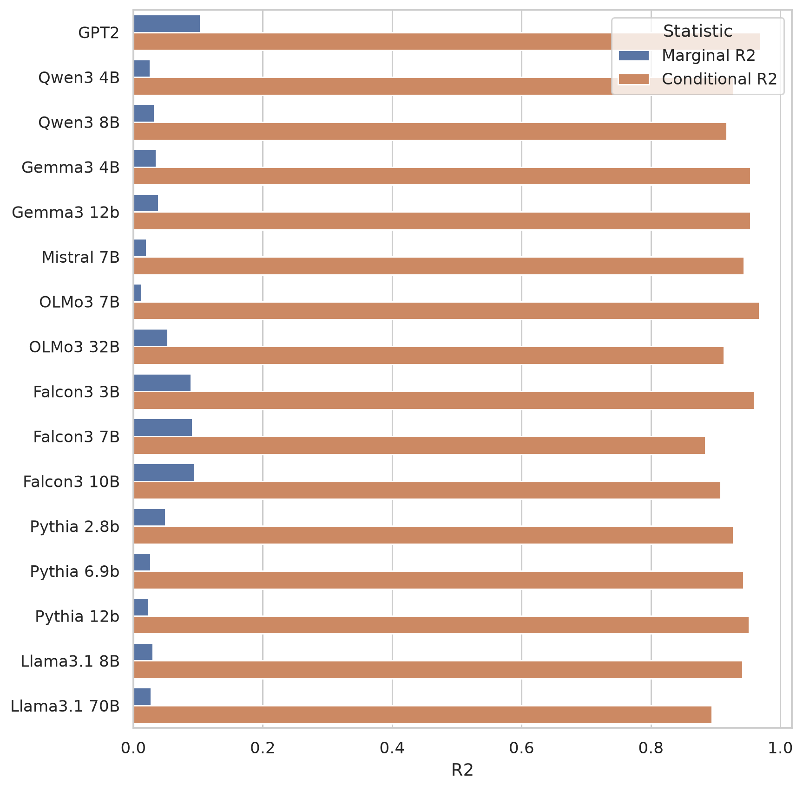
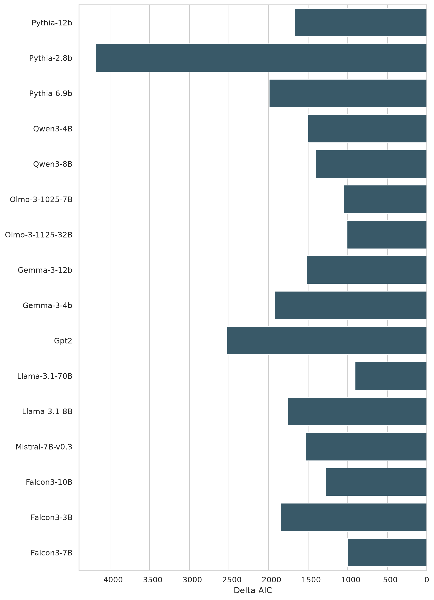
The baseline fit uses the full fixed-effects formula with a random intercept only. The full fit adds the random-slope structure on top of that same baseline.
| Model | Baseline conditional R2 | Expanded conditional R2 | Delta conditional R2 | Baseline AIC | Expanded AIC | Delta AIC | Baseline random effects | Expanded random effects |
|---|---|---|---|---|---|---|---|---|
| EleutherAI_pythia-12b-deduped | 0.944 | 0.952 | 0.007 | 18830.963 | 17158.540 | -1672.423 | 1 | 1 + C(semantic_role) + C(syntactic_role) + C(valence) + C(dominance) |
| EleutherAI_pythia-2.8b-deduped | 0.937 | 0.926 | -0.012 | 14620.776 | 10439.372 | -4181.404 | 1 | 1 + C(semantic_role) + C(syntactic_role) + C(valence) + C(dominance) |
| EleutherAI_pythia-6.9b-deduped | 0.934 | 0.943 | 0.009 | 20138.651 | 18148.185 | -1990.466 | 1 | 1 + C(semantic_role) + C(syntactic_role) + C(valence) + C(dominance) |
| Qwen_Qwen3-4B-Base | 0.919 | 0.928 | 0.009 | 20420.206 | 18916.822 | -1503.383 | 1 | 1 + C(semantic_role) + C(syntactic_role) + C(valence) + C(dominance) |
| Qwen_Qwen3-8B-Base | 0.908 | 0.917 | 0.009 | 23474.024 | 22068.646 | -1405.378 | 1 | 1 + C(semantic_role) + C(syntactic_role) + C(valence) + C(dominance) |
| allenai_Olmo-3-1025-7B | 0.937 | 0.967 | 0.030 | 17985.536 | 16933.469 | -1052.067 | 1 | 1 + C(semantic_role) + C(syntactic_role) + C(valence) + C(dominance) |
| allenai_Olmo-3-1125-32B | 0.906 | 0.913 | 0.007 | 26198.454 | 25190.390 | -1008.064 | 1 | 1 + C(semantic_role) + C(syntactic_role) + C(valence) + C(dominance) |
| google_gemma-3-12b-pt | 0.948 | 0.956 | 0.007 | 12286.484 | 10768.417 | -1518.067 | 1 | 1 + C(semantic_role) + C(syntactic_role) + C(valence) + C(dominance) |
| google_gemma-3-4b-pt | 0.946 | 0.954 | 0.007 | 11081.158 | 9152.967 | -1928.191 | 1 | 1 + C(semantic_role) + C(syntactic_role) + C(valence) + C(dominance) |
| gpt2 | 0.946 | 0.956 | 0.010 | 8395.591 | 5637.914 | -2757.677 | 1 | 1 + C(semantic_role) + C(syntactic_role) + C(valence) + C(dominance) |
| meta-llama_Llama-3.1-70B | 0.886 | 0.894 | 0.008 | 23906.764 | 22998.948 | -907.817 | 1 | 1 + C(semantic_role) + C(syntactic_role) + C(valence) + C(dominance) |
| mistralai_Mistral-7B-v0.3 | 0.935 | 0.942 | 0.006 | 15998.527 | 14465.999 | -1532.529 | 1 | 1 + C(semantic_role) + C(syntactic_role) + C(valence) + C(dominance) |
| tiiuae_Falcon3-10B-Base | 0.897 | 0.908 | 0.010 | 24179.059 | 22831.644 | -1347.415 | 1 | 1 + C(semantic_role) + C(syntactic_role) + C(valence) + C(dominance) |
| tiiuae_Falcon3-3B-Base | 0.953 | 0.959 | 0.006 | 6612.753 | 4765.187 | -1847.566 | 1 | 1 + C(semantic_role) + C(syntactic_role) + C(valence) + C(dominance) |
| tiiuae_Falcon3-7B-Base | 0.877 | 0.887 | 0.010 | 24125.615 | 23116.930 | -1008.685 | 1 | 1 + C(semantic_role) + C(syntactic_role) + C(valence) + C(dominance) |
The plot shows absolute explained variance (`R2`) split into three stacked components: the random intercept alone, fixed effects, and the additional contribution from random slopes.
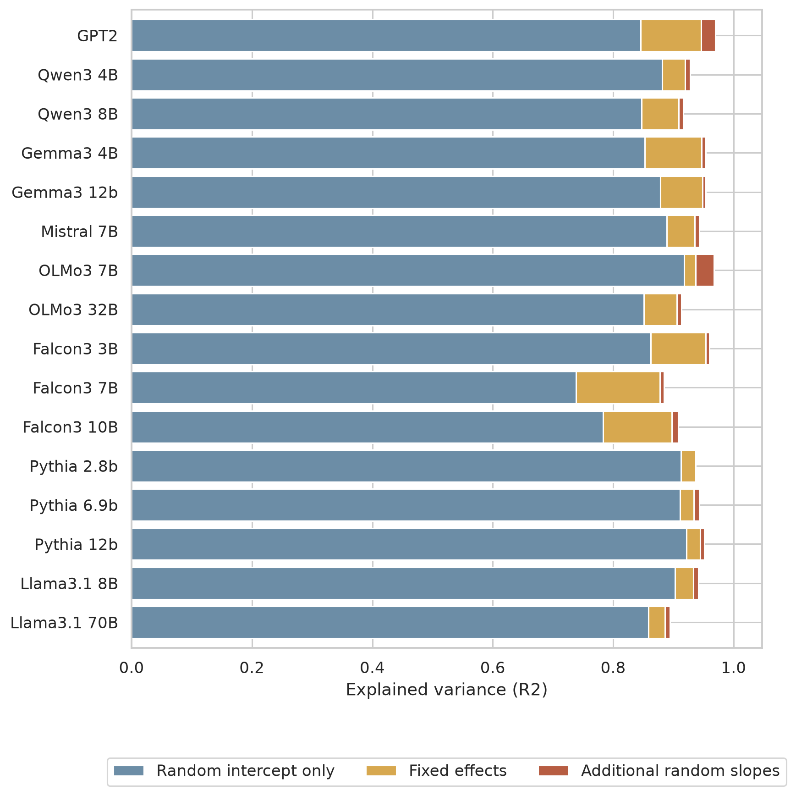
| Model | Fixed effects R2 | Random intercept only R2 | Random intercept + fixed effects R2 | Fixed-effects share within baseline explained variance | Random-intercept-only share within baseline explained variance |
|---|---|---|---|---|---|
| EleutherAI_pythia-12b-deduped | 0.022 | 0.922 | 0.944 | 0.024 | 0.976 |
| EleutherAI_pythia-2.8b-deduped | 0.027 | 0.910 | 0.937 | 0.029 | 0.971 |
| EleutherAI_pythia-6.9b-deduped | 0.023 | 0.911 | 0.934 | 0.024 | 0.976 |
| Qwen_Qwen3-4B-Base | 0.029 | 0.890 | 0.919 | 0.031 | 0.969 |
| Qwen_Qwen3-8B-Base | 0.038 | 0.871 | 0.908 | 0.041 | 0.959 |
| allenai_Olmo-3-1025-7B | 0.019 | 0.918 | 0.937 | 0.020 | 0.980 |
| allenai_Olmo-3-1125-32B | 0.055 | 0.851 | 0.906 | 0.061 | 0.939 |
| google_gemma-3-12b-pt | 0.031 | 0.917 | 0.948 | 0.033 | 0.967 |
| google_gemma-3-4b-pt | 0.043 | 0.903 | 0.946 | 0.046 | 0.954 |
| gpt2 | 0.121 | 0.825 | 0.946 | 0.128 | 0.872 |
| meta-llama_Llama-3.1-70B | 0.027 | 0.859 | 0.886 | 0.031 | 0.969 |
| mistralai_Mistral-7B-v0.3 | 0.043 | 0.892 | 0.935 | 0.046 | 0.954 |
| tiiuae_Falcon3-10B-Base | 0.077 | 0.821 | 0.897 | 0.085 | 0.915 |
| tiiuae_Falcon3-3B-Base | 0.100 | 0.854 | 0.953 | 0.105 | 0.895 |
| tiiuae_Falcon3-7B-Base | 0.085 | 0.792 | 0.877 | 0.097 | 0.903 |
| Model | Random intercept + fixed effects R2 | Additional random-slope R2 | Full model with random slopes R2 | Baseline share within full explained variance | Random-slope share within full explained variance |
|---|---|---|---|---|---|
| EleutherAI_pythia-12b-deduped | 0.944 | 0.007 | 0.952 | 0.992 | 0.008 |
| EleutherAI_pythia-2.8b-deduped | 0.937 | -0.012 | 0.926 | 1.013 | -0.013 |
| EleutherAI_pythia-6.9b-deduped | 0.934 | 0.009 | 0.943 | 0.990 | 0.010 |
| Qwen_Qwen3-4B-Base | 0.919 | 0.009 | 0.928 | 0.990 | 0.010 |
| Qwen_Qwen3-8B-Base | 0.908 | 0.009 | 0.917 | 0.990 | 0.010 |
| allenai_Olmo-3-1025-7B | 0.937 | 0.030 | 0.967 | 0.969 | 0.031 |
| allenai_Olmo-3-1125-32B | 0.906 | 0.007 | 0.913 | 0.992 | 0.008 |
| google_gemma-3-12b-pt | 0.948 | 0.007 | 0.956 | 0.992 | 0.008 |
| google_gemma-3-4b-pt | 0.946 | 0.007 | 0.954 | 0.993 | 0.007 |
| gpt2 | 0.946 | 0.010 | 0.956 | 0.989 | 0.011 |
| meta-llama_Llama-3.1-70B | 0.886 | 0.008 | 0.894 | 0.991 | 0.009 |
| mistralai_Mistral-7B-v0.3 | 0.935 | 0.006 | 0.942 | 0.993 | 0.007 |
| tiiuae_Falcon3-10B-Base | 0.897 | 0.010 | 0.908 | 0.989 | 0.011 |
| tiiuae_Falcon3-3B-Base | 0.953 | 0.006 | 0.959 | 0.993 | 0.007 |
| tiiuae_Falcon3-7B-Base | 0.877 | 0.010 | 0.887 | 0.988 | 0.012 |
Each fixed effect is summarized by the variance of its fitted contribution across observations, with each covariance divided equally between its two terms. The allocations sum to the variance of the complete fixed-effects predictor; negative allocations can occur when a term covaries negatively with the others.
| Model | Dominance | Dominance:lex emb norm | Dominance:log frequency | Semantic role | Semantic role:dominance | Semantic role:syntactic role | Semantic role:valence | Semantic role:lex emb norm | Semantic role:log frequency | Syntactic role | Syntactic role:dominance | Syntactic role:valence | Syntactic role:lex emb norm | Syntactic role:log frequency | Tense | Tense:dominance | Tense:semantic role | Tense:syntactic role | Tense:valence | Tense:lex emb norm | Tense:log frequency | Valence | Valence:dominance | Valence:lex emb norm | Valence:log frequency | Lex emb norm | Log frequency | Log frequency:lex emb norm | Total fixed-effect fitted variance |
|---|---|---|---|---|---|---|---|---|---|---|---|---|---|---|---|---|---|---|---|---|---|---|---|---|---|---|---|---|---|
| EleutherAI_pythia-12b-deduped | 0.000 | 0.001 | -0.002 | -0.000 | 0.000 | 0.000 | 0.001 | 0.000 | 0.000 | 0.012 | -0.001 | -0.000 | -0.006 | -0.007 | 0.014 | -0.001 | -0.001 | 0.003 | 0.000 | 0.019 | -0.009 | 0.000 | 0.001 | -0.000 | 0.001 | -0.040 | -0.107 | 0.213 | 0.093 |
| EleutherAI_pythia-2.8b-deduped | 0.005 | 0.004 | -0.002 | 0.005 | 0.000 | -0.000 | -0.000 | -0.005 | 0.004 | -0.000 | 0.000 | 0.000 | -0.003 | -0.001 | 0.015 | -0.000 | -0.001 | 0.003 | 0.003 | -0.003 | -0.003 | 0.007 | -0.003 | 0.003 | -0.002 | 0.003 | 0.012 | 0.008 | 0.049 |
| EleutherAI_pythia-6.9b-deduped | 0.000 | 0.000 | 0.000 | -0.001 | 0.000 | -0.000 | 0.000 | 0.000 | -0.001 | 0.000 | -0.001 | 0.000 | 0.009 | -0.012 | 0.015 | -0.000 | 0.000 | 0.011 | 0.005 | -0.009 | 0.004 | 0.002 | -0.000 | 0.000 | -0.000 | -0.043 | -0.060 | 0.160 | 0.079 |
| Qwen_Qwen3-4B-Base | -0.001 | -0.001 | 0.001 | 0.009 | -0.001 | 0.001 | 0.002 | -0.005 | 0.002 | 0.052 | -0.003 | -0.000 | -0.034 | 0.007 | 0.006 | 0.001 | 0.002 | 0.009 | 0.002 | 0.001 | -0.001 | 0.009 | 0.000 | -0.003 | -0.000 | 0.022 | 0.042 | -0.052 | 0.067 |
| Qwen_Qwen3-8B-Base | 0.002 | 0.001 | -0.000 | 0.005 | 0.000 | 0.004 | 0.004 | -0.002 | 0.001 | 0.023 | -0.004 | 0.003 | 0.041 | -0.041 | 0.022 | -0.001 | 0.002 | 0.002 | 0.006 | -0.018 | 0.014 | 0.010 | 0.000 | 0.002 | -0.004 | -0.021 | -0.018 | 0.056 | 0.087 |
| allenai_Olmo-3-1025-7B | -0.001 | 0.001 | -0.000 | 0.002 | 0.000 | 0.007 | 0.000 | -0.000 | -0.001 | -0.015 | 0.002 | 0.002 | 0.008 | 0.013 | 0.007 | -0.001 | 0.003 | -0.002 | 0.004 | 0.002 | 0.001 | 0.009 | -0.000 | -0.001 | -0.000 | -0.059 | 0.000 | 0.084 | 0.065 |
| allenai_Olmo-3-1125-32B | 0.001 | 0.002 | 0.000 | -0.000 | 0.000 | 0.018 | -0.001 | -0.000 | 0.000 | 0.071 | -0.009 | 0.007 | -0.002 | 0.009 | 0.033 | -0.004 | -0.002 | -0.007 | 0.008 | -0.001 | 0.010 | 0.003 | 0.000 | 0.000 | -0.000 | -0.088 | -0.071 | 0.195 | 0.172 |
| google_gemma-3-12b-pt | 0.001 | -0.005 | 0.001 | 0.000 | 0.000 | 0.004 | 0.000 | -0.003 | -0.000 | 0.018 | -0.001 | 0.000 | -0.026 | 0.008 | 0.013 | -0.000 | -0.001 | 0.000 | 0.002 | -0.014 | 0.012 | 0.004 | -0.000 | -0.001 | 0.000 | 0.279 | 0.320 | -0.492 | 0.120 |
| google_gemma-3-4b-pt | -0.000 | 0.000 | 0.000 | 0.002 | 0.000 | 0.004 | 0.001 | -0.003 | 0.001 | 0.054 | -0.000 | 0.003 | -0.051 | 0.041 | 0.020 | -0.000 | 0.001 | -0.008 | 0.002 | -0.019 | 0.010 | 0.006 | -0.001 | -0.000 | -0.000 | 0.068 | 0.151 | -0.196 | 0.082 |
| gpt2 | -0.000 | -0.001 | 0.000 | 0.007 | -0.001 | -0.001 | 0.000 | 0.000 | -0.000 | 0.001 | -0.000 | -0.000 | 0.000 | 0.001 | 0.005 | 0.002 | -0.001 | -0.001 | 0.001 | 0.014 | -0.000 | 0.003 | -0.000 | -0.001 | 0.001 | 0.059 | -0.059 | 0.111 | 0.141 |
| meta-llama_Llama-3.1-70B | 0.001 | -0.002 | 0.000 | 0.000 | -0.000 | -0.000 | 0.000 | -0.001 | 0.000 | 0.006 | 0.001 | 0.000 | -0.002 | 0.000 | 0.036 | -0.003 | -0.001 | 0.005 | 0.005 | 0.000 | 0.004 | 0.000 | 0.002 | 0.000 | -0.000 | 0.016 | -0.000 | -0.009 | 0.060 |
| mistralai_Mistral-7B-v0.3 | -0.000 | 0.001 | 0.000 | 0.001 | 0.001 | 0.003 | 0.000 | -0.000 | 0.001 | -0.001 | -0.000 | 0.000 | -0.001 | 0.004 | 0.008 | -0.002 | 0.002 | 0.004 | 0.003 | -0.004 | 0.014 | 0.000 | 0.000 | 0.000 | 0.000 | -0.027 | -0.029 | 0.074 | 0.052 |
| tiiuae_Falcon3-10B-Base | -0.000 | -0.002 | 0.000 | 0.002 | 0.000 | 0.011 | -0.001 | 0.002 | 0.000 | 0.074 | -0.001 | -0.001 | -0.084 | 0.019 | 0.016 | 0.001 | -0.000 | -0.000 | 0.010 | -0.011 | 0.015 | 0.030 | -0.001 | -0.018 | 0.009 | 0.227 | 0.043 | -0.146 | 0.192 |
| tiiuae_Falcon3-3B-Base | 0.002 | 0.002 | -0.000 | -0.000 | -0.000 | 0.009 | -0.000 | -0.004 | 0.001 | 0.046 | -0.002 | -0.002 | -0.061 | 0.015 | 0.026 | 0.000 | 0.000 | 0.003 | 0.001 | -0.031 | 0.010 | 0.005 | 0.000 | 0.003 | -0.000 | 0.064 | -0.209 | 0.302 | 0.179 |
| tiiuae_Falcon3-7B-Base | 0.001 | -0.005 | 0.004 | 0.003 | -0.000 | 0.008 | 0.000 | -0.010 | 0.005 | 0.092 | -0.003 | 0.000 | -0.095 | 0.055 | 0.022 | -0.001 | -0.001 | 0.002 | 0.007 | -0.017 | 0.023 | 0.019 | -0.001 | -0.010 | 0.003 | 0.172 | 0.084 | -0.179 | 0.177 |
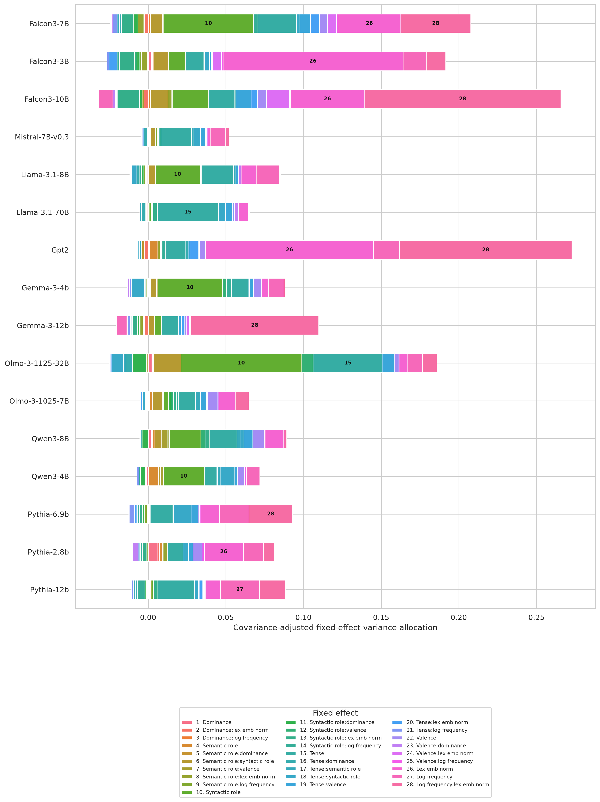
The random-intercept baseline uses the same full fixed-effects formula.
| Model | Semantic role | Syntactic role | Valence | Dominance | Total random-slope variance |
|---|---|---|---|---|---|
| EleutherAI_pythia-12b-deduped | 0.018 | 0.054 | 0.002 | 0.007 | 0.081 |
| EleutherAI_pythia-2.8b-deduped | 0.008 | 0.079 | 0.006 | 0.007 | 0.101 |
| EleutherAI_pythia-6.9b-deduped | 0.010 | 0.085 | 0.003 | 0.004 | 0.102 |
| Qwen_Qwen3-4B-Base | 0.011 | 0.061 | 0.006 | 0.005 | 0.082 |
| Qwen_Qwen3-8B-Base | 0.015 | 0.051 | 0.020 | 0.008 | 0.093 |
| allenai_Olmo-3-1025-7B | 0.209 | 0.083 | 0.234 | 0.180 | 0.707 |
| allenai_Olmo-3-1125-32B | 0.010 | 0.053 | 0.015 | 0.007 | 0.085 |
| google_gemma-3-12b-pt | 0.002 | 0.031 | 0.012 | 0.005 | 0.051 |
| google_gemma-3-4b-pt | 0.007 | 0.042 | 0.005 | 0.002 | 0.056 |
| gpt2 | 0.003 | 0.057 | 0.002 | 0.003 | 0.066 |
| meta-llama_Llama-3.1-70B | 0.009 | 0.046 | 0.007 | 0.006 | 0.068 |
| mistralai_Mistral-7B-v0.3 | 0.006 | 0.036 | 0.015 | 0.006 | 0.063 |
| tiiuae_Falcon3-10B-Base | 0.005 | 0.074 | 0.011 | 0.003 | 0.093 |
| tiiuae_Falcon3-3B-Base | 0.002 | 0.033 | 0.004 | 0.003 | 0.042 |
| tiiuae_Falcon3-7B-Base | 0.007 | 0.048 | 0.010 | 0.008 | 0.073 |
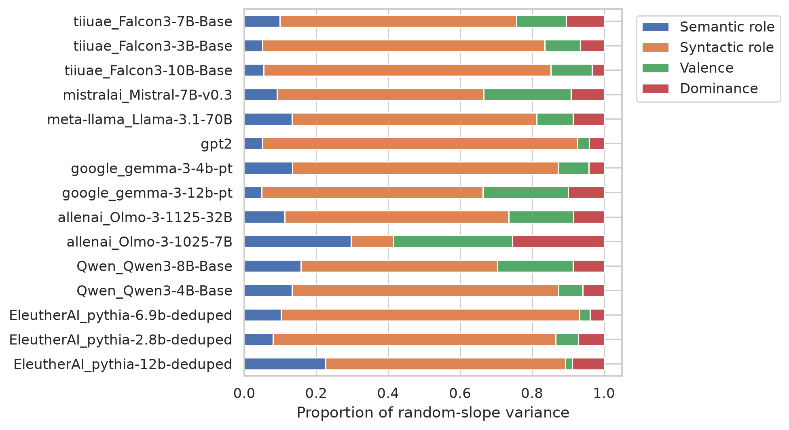
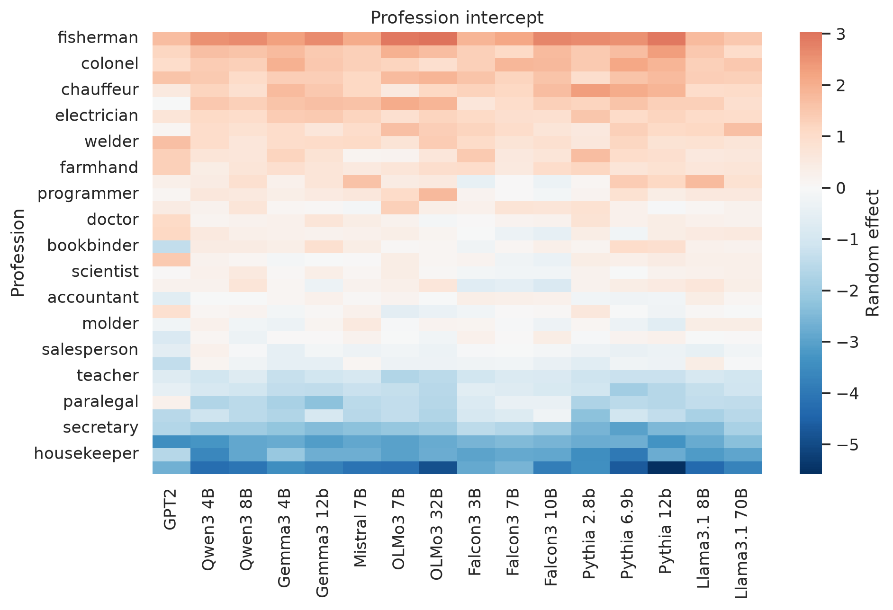
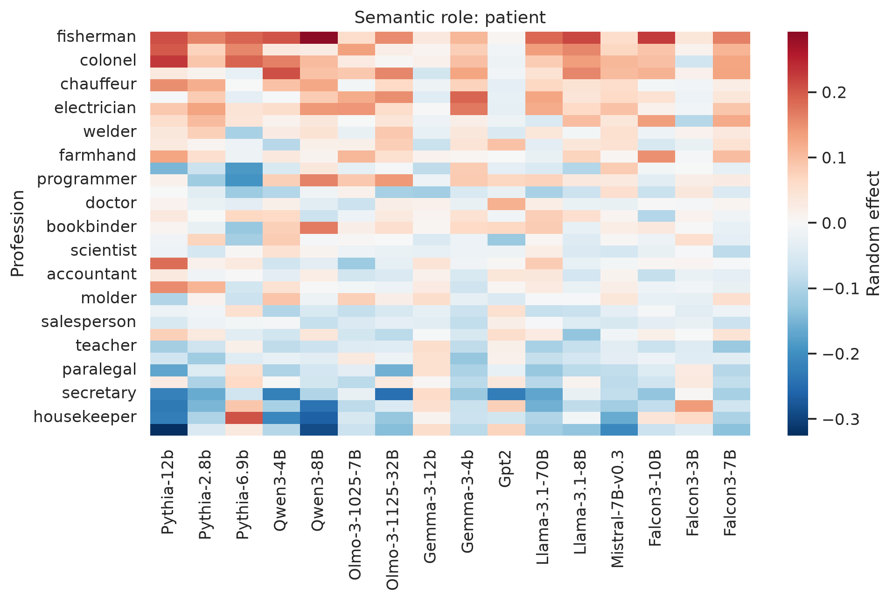
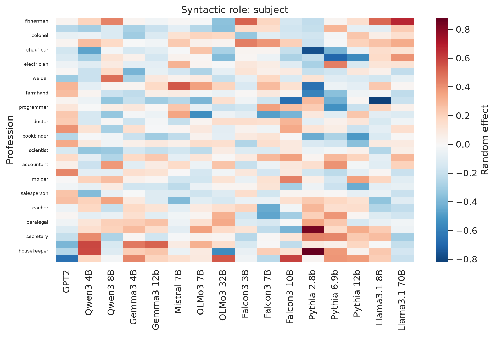
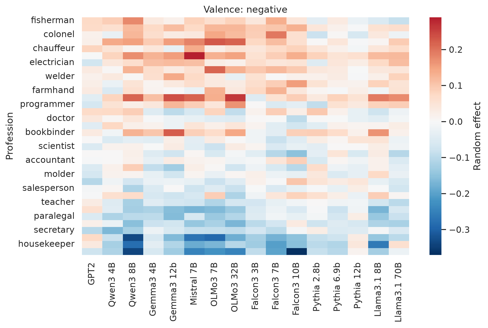
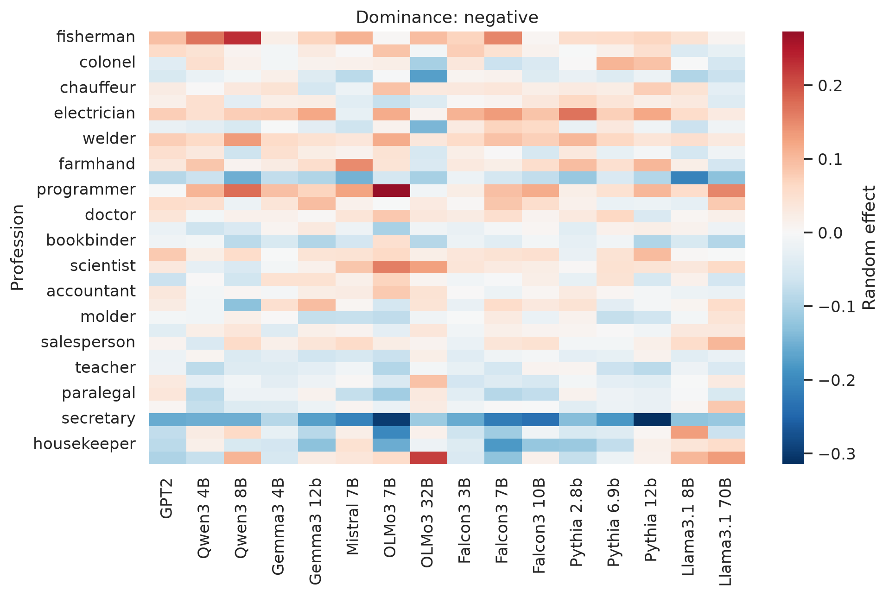
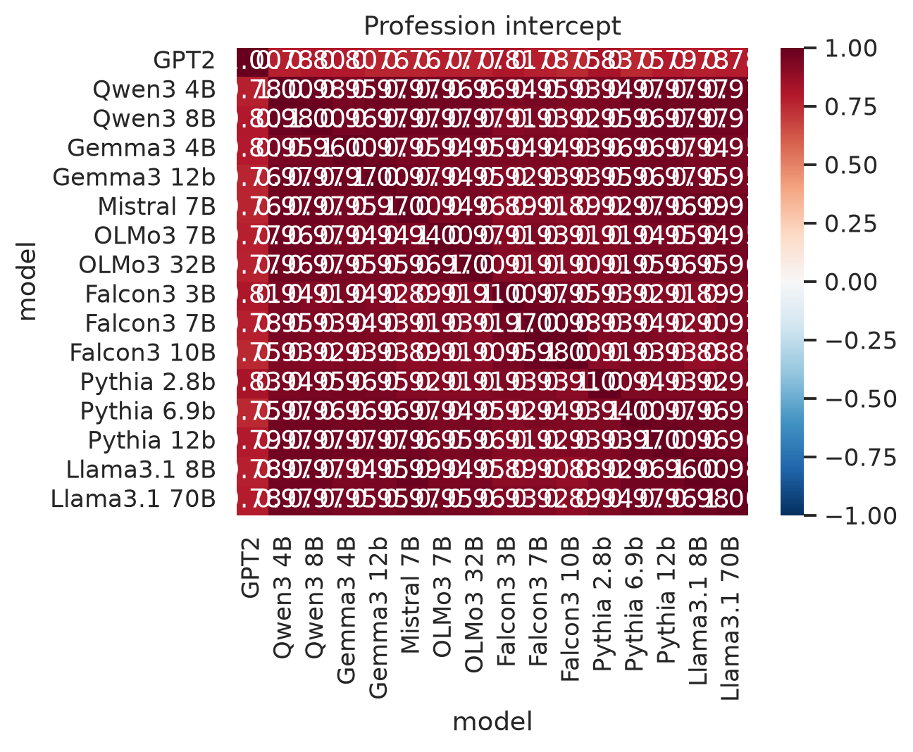
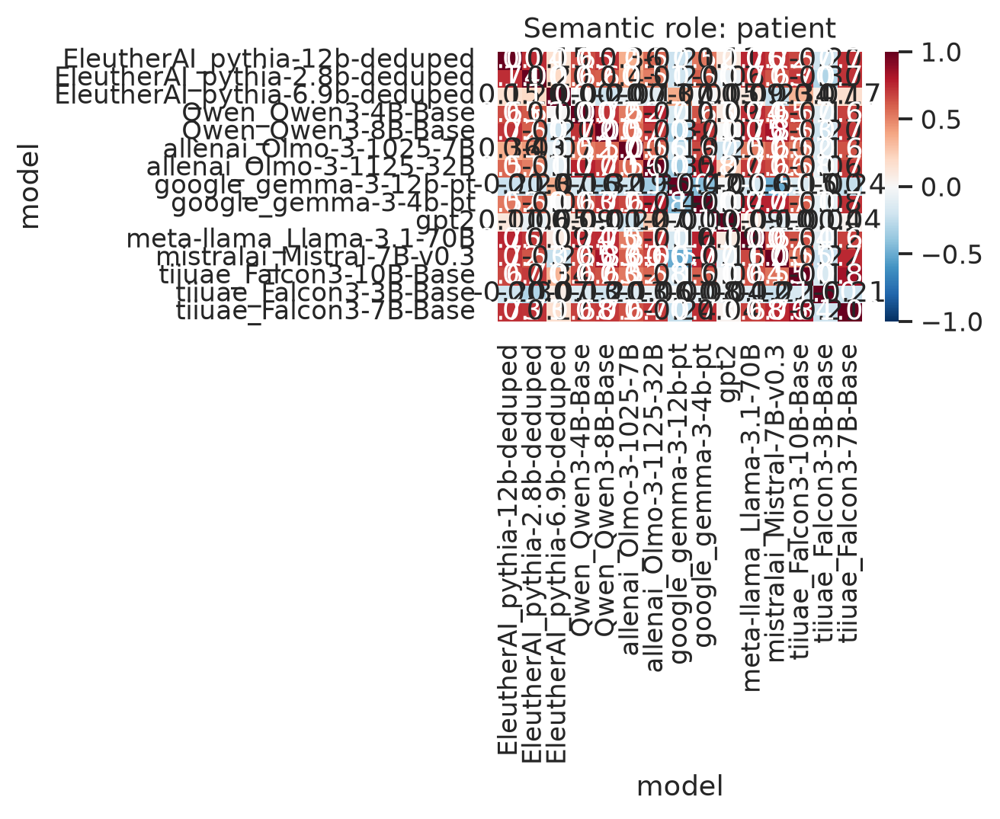
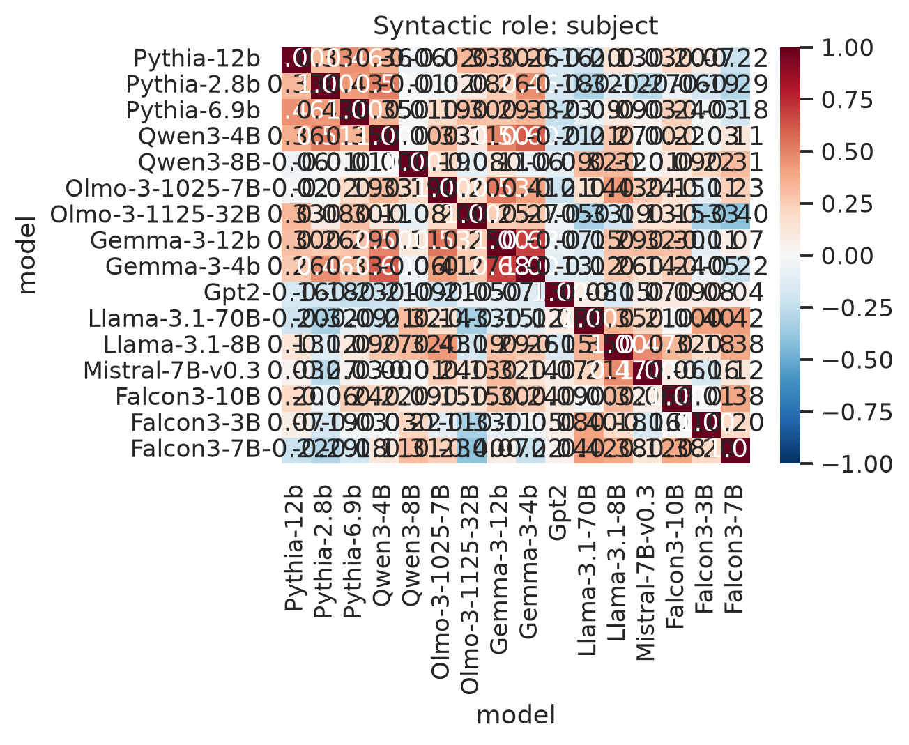
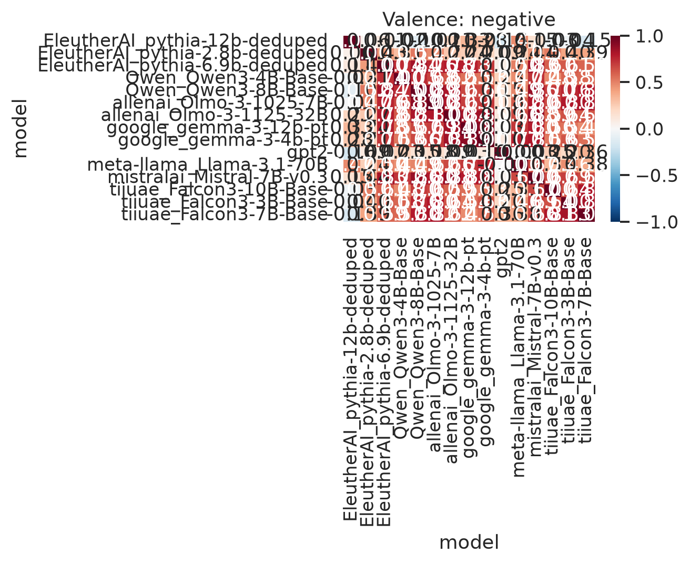
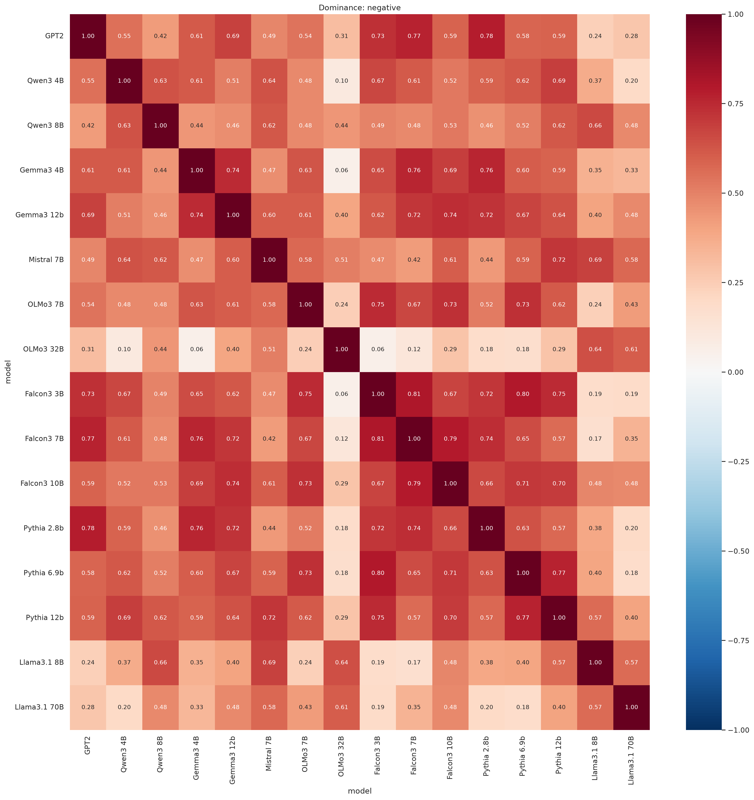
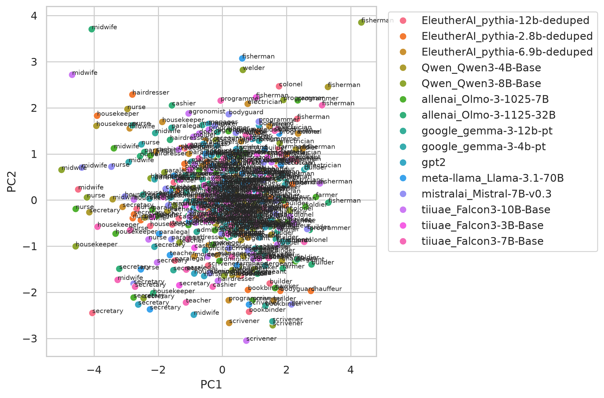
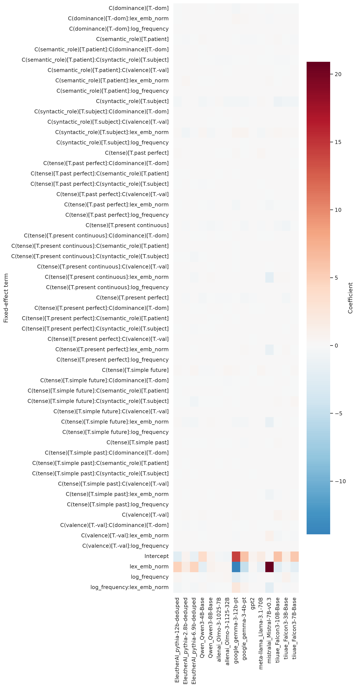
| Model | Term | Estimate | Std. error | p value | CI low | CI high |
|---|---|---|---|---|---|---|
| EleutherAI_pythia-12b-deduped | C(dominance)[T.-dom] | -0.056 | 0.081 | 0.487 | -0.215 | 0.102 |
| EleutherAI_pythia-12b-deduped | C(dominance)[T.-dom]:lex_emb_norm | -0.049 | 0.129 | 0.703 | -0.301 | 0.203 |
| EleutherAI_pythia-12b-deduped | C(dominance)[T.-dom]:log_frequency | 0.008 | 0.014 | 0.553 | -0.019 | 0.036 |
| EleutherAI_pythia-12b-deduped | C(semantic_role)[T.patient] | -0.052 | 0.122 | 0.667 | -0.291 | 0.186 |
| EleutherAI_pythia-12b-deduped | C(semantic_role)[T.patient]:C(dominance)[T.-dom] | 0.024 | 0.013 | 0.057 | -0.001 | 0.048 |
| EleutherAI_pythia-12b-deduped | C(semantic_role)[T.patient]:C(syntactic_role)[T.subject] | -0.035 | 0.013 | 0.005 | -0.060 | -0.011 |
| EleutherAI_pythia-12b-deduped | C(semantic_role)[T.patient]:C(valence)[T.-val] | 0.088 | 0.013 | 0.000 | 0.064 | 0.113 |
| EleutherAI_pythia-12b-deduped | C(semantic_role)[T.patient]:lex_emb_norm | 0.085 | 0.196 | 0.664 | -0.298 | 0.468 |
| EleutherAI_pythia-12b-deduped | C(semantic_role)[T.patient]:log_frequency | -0.005 | 0.021 | 0.823 | -0.047 | 0.037 |
| EleutherAI_pythia-12b-deduped | C(syntactic_role)[T.subject] | -0.576 | 0.202 | 0.004 | -0.973 | -0.179 |
| EleutherAI_pythia-12b-deduped | C(syntactic_role)[T.subject]:C(dominance)[T.-dom] | 0.138 | 0.013 | 0.000 | 0.113 | 0.162 |
| EleutherAI_pythia-12b-deduped | C(syntactic_role)[T.subject]:C(valence)[T.-val] | 0.012 | 0.013 | 0.351 | -0.013 | 0.036 |
| EleutherAI_pythia-12b-deduped | C(syntactic_role)[T.subject]:lex_emb_norm | 0.284 | 0.328 | 0.386 | -0.358 | 0.927 |
| EleutherAI_pythia-12b-deduped | C(syntactic_role)[T.subject]:log_frequency | 0.030 | 0.036 | 0.408 | -0.041 | 0.100 |
| EleutherAI_pythia-12b-deduped | C(tense)[T.past perfect] | 0.305 | 0.058 | 0.000 | 0.191 | 0.419 |
| EleutherAI_pythia-12b-deduped | C(tense)[T.past perfect]:C(dominance)[T.-dom] | -0.005 | 0.022 | 0.829 | -0.047 | 0.038 |
| EleutherAI_pythia-12b-deduped | C(tense)[T.past perfect]:C(semantic_role)[T.patient] | -0.043 | 0.022 | 0.050 | -0.085 | -0.000 |
| EleutherAI_pythia-12b-deduped | C(tense)[T.past perfect]:C(syntactic_role)[T.subject] | -0.137 | 0.022 | 0.000 | -0.179 | -0.094 |
| EleutherAI_pythia-12b-deduped | C(tense)[T.past perfect]:C(valence)[T.-val] | -0.003 | 0.022 | 0.900 | -0.045 | 0.040 |
| EleutherAI_pythia-12b-deduped | C(tense)[T.past perfect]:lex_emb_norm | -0.132 | 0.088 | 0.136 | -0.304 | 0.041 |
| EleutherAI_pythia-12b-deduped | C(tense)[T.past perfect]:log_frequency | 0.003 | 0.010 | 0.766 | -0.016 | 0.022 |
| EleutherAI_pythia-12b-deduped | C(tense)[T.present continuous] | 0.010 | 0.058 | 0.866 | -0.105 | 0.124 |
| EleutherAI_pythia-12b-deduped | C(tense)[T.present continuous]:C(dominance)[T.-dom] | -0.036 | 0.022 | 0.097 | -0.079 | 0.007 |
| EleutherAI_pythia-12b-deduped | C(tense)[T.present continuous]:C(semantic_role)[T.patient] | -0.002 | 0.022 | 0.913 | -0.045 | 0.040 |
| EleutherAI_pythia-12b-deduped | C(tense)[T.present continuous]:C(syntactic_role)[T.subject] | -0.068 | 0.022 | 0.002 | -0.110 | -0.025 |
| EleutherAI_pythia-12b-deduped | C(tense)[T.present continuous]:C(valence)[T.-val] | -0.001 | 0.022 | 0.952 | -0.044 | 0.041 |
| EleutherAI_pythia-12b-deduped | C(tense)[T.present continuous]:lex_emb_norm | 0.150 | 0.088 | 0.090 | -0.023 | 0.322 |
| EleutherAI_pythia-12b-deduped | C(tense)[T.present continuous]:log_frequency | 0.000 | 0.010 | 0.963 | -0.018 | 0.019 |
| EleutherAI_pythia-12b-deduped | C(tense)[T.present perfect] | 0.033 | 0.058 | 0.577 | -0.082 | 0.147 |
| EleutherAI_pythia-12b-deduped | C(tense)[T.present perfect]:C(dominance)[T.-dom] | -0.030 | 0.022 | 0.166 | -0.073 | 0.012 |
| EleutherAI_pythia-12b-deduped | C(tense)[T.present perfect]:C(semantic_role)[T.patient] | -0.036 | 0.022 | 0.100 | -0.078 | 0.007 |
| EleutherAI_pythia-12b-deduped | C(tense)[T.present perfect]:C(syntactic_role)[T.subject] | -0.152 | 0.022 | 0.000 | -0.194 | -0.109 |
| EleutherAI_pythia-12b-deduped | C(tense)[T.present perfect]:C(valence)[T.-val] | 0.076 | 0.022 | 0.000 | 0.034 | 0.119 |
| EleutherAI_pythia-12b-deduped | C(tense)[T.present perfect]:lex_emb_norm | 0.224 | 0.088 | 0.011 | 0.052 | 0.397 |
| EleutherAI_pythia-12b-deduped | C(tense)[T.present perfect]:log_frequency | -0.006 | 0.010 | 0.552 | -0.025 | 0.013 |
| EleutherAI_pythia-12b-deduped | C(tense)[T.simple future] | 0.348 | 0.058 | 0.000 | 0.233 | 0.462 |
| EleutherAI_pythia-12b-deduped | C(tense)[T.simple future]:C(dominance)[T.-dom] | -0.056 | 0.022 | 0.010 | -0.099 | -0.013 |
| EleutherAI_pythia-12b-deduped | C(tense)[T.simple future]:C(semantic_role)[T.patient] | -0.050 | 0.022 | 0.021 | -0.093 | -0.008 |
| EleutherAI_pythia-12b-deduped | C(tense)[T.simple future]:C(syntactic_role)[T.subject] | -0.044 | 0.022 | 0.045 | -0.086 | -0.001 |
| EleutherAI_pythia-12b-deduped | C(tense)[T.simple future]:C(valence)[T.-val] | 0.011 | 0.022 | 0.598 | -0.031 | 0.054 |
| EleutherAI_pythia-12b-deduped | C(tense)[T.simple future]:lex_emb_norm | 0.352 | 0.088 | 0.000 | 0.179 | 0.524 |
| EleutherAI_pythia-12b-deduped | C(tense)[T.simple future]:log_frequency | -0.027 | 0.010 | 0.005 | -0.046 | -0.008 |
| EleutherAI_pythia-12b-deduped | C(tense)[T.simple past] | 0.027 | 0.058 | 0.649 | -0.088 | 0.141 |
| EleutherAI_pythia-12b-deduped | C(tense)[T.simple past]:C(dominance)[T.-dom] | 0.031 | 0.022 | 0.160 | -0.012 | 0.073 |
| EleutherAI_pythia-12b-deduped | C(tense)[T.simple past]:C(semantic_role)[T.patient] | 0.005 | 0.022 | 0.802 | -0.037 | 0.048 |
| EleutherAI_pythia-12b-deduped | C(tense)[T.simple past]:C(syntactic_role)[T.subject] | -0.116 | 0.022 | 0.000 | -0.159 | -0.074 |
| EleutherAI_pythia-12b-deduped | C(tense)[T.simple past]:C(valence)[T.-val] | 0.051 | 0.022 | 0.019 | 0.008 | 0.094 |
| EleutherAI_pythia-12b-deduped | C(tense)[T.simple past]:lex_emb_norm | 0.063 | 0.088 | 0.474 | -0.110 | 0.236 |
| EleutherAI_pythia-12b-deduped | C(tense)[T.simple past]:log_frequency | -0.002 | 0.010 | 0.851 | -0.021 | 0.017 |
| EleutherAI_pythia-12b-deduped | C(valence)[T.-val] | 0.012 | 0.049 | 0.809 | -0.084 | 0.108 |
| EleutherAI_pythia-12b-deduped | C(valence)[T.-val]:C(dominance)[T.-dom] | -0.084 | 0.013 | 0.000 | -0.109 | -0.059 |
| EleutherAI_pythia-12b-deduped | C(valence)[T.-val]:lex_emb_norm | 0.044 | 0.075 | 0.556 | -0.102 | 0.190 |
| EleutherAI_pythia-12b-deduped | C(valence)[T.-val]:log_frequency | -0.010 | 0.008 | 0.206 | -0.026 | 0.006 |
| EleutherAI_pythia-12b-deduped | Intercept | -2.331 | 5.461 | 0.670 | -13.034 | 8.372 |
| EleutherAI_pythia-12b-deduped | lex_emb_norm | 4.753 | 5.648 | 0.400 | -6.316 | 15.823 |
| EleutherAI_pythia-12b-deduped | log_frequency | 0.370 | 0.781 | 0.636 | -1.160 | 1.900 |
| EleutherAI_pythia-12b-deduped | log_frequency:lex_emb_norm | -0.515 | 0.682 | 0.451 | -1.852 | 0.822 |
| EleutherAI_pythia-2.8b-deduped | C(dominance)[T.-dom] | 0.182 | 0.077 | 0.017 | 0.032 | 0.332 |
| EleutherAI_pythia-2.8b-deduped | C(dominance)[T.-dom]:lex_emb_norm | 0.167 | 0.159 | 0.293 | -0.145 | 0.479 |
| EleutherAI_pythia-2.8b-deduped | C(dominance)[T.-dom]:log_frequency | -0.015 | 0.014 | 0.280 | -0.041 | 0.012 |
| EleutherAI_pythia-2.8b-deduped | C(semantic_role)[T.patient] | -0.283 | 0.080 | 0.000 | -0.440 | -0.126 |
| EleutherAI_pythia-2.8b-deduped | C(semantic_role)[T.patient]:C(dominance)[T.-dom] | 0.035 | 0.010 | 0.001 | 0.015 | 0.055 |
| EleutherAI_pythia-2.8b-deduped | C(semantic_role)[T.patient]:C(syntactic_role)[T.subject] | 0.052 | 0.010 | 0.000 | 0.032 | 0.072 |
| EleutherAI_pythia-2.8b-deduped | C(semantic_role)[T.patient]:C(valence)[T.-val] | -0.020 | 0.010 | 0.051 | -0.040 | 0.000 |
| EleutherAI_pythia-2.8b-deduped | C(semantic_role)[T.patient]:lex_emb_norm | 0.401 | 0.167 | 0.016 | 0.074 | 0.727 |
| EleutherAI_pythia-2.8b-deduped | C(semantic_role)[T.patient]:log_frequency | -0.019 | 0.014 | 0.174 | -0.047 | 0.009 |
| EleutherAI_pythia-2.8b-deduped | C(syntactic_role)[T.subject] | -0.030 | 0.237 | 0.900 | -0.494 | 0.434 |
| EleutherAI_pythia-2.8b-deduped | C(syntactic_role)[T.subject]:C(dominance)[T.-dom] | 0.007 | 0.010 | 0.464 | -0.013 | 0.027 |
| EleutherAI_pythia-2.8b-deduped | C(syntactic_role)[T.subject]:C(valence)[T.-val] | 0.009 | 0.010 | 0.352 | -0.010 | 0.029 |
| EleutherAI_pythia-2.8b-deduped | C(syntactic_role)[T.subject]:lex_emb_norm | -0.666 | 0.501 | 0.183 | -1.647 | 0.315 |
| EleutherAI_pythia-2.8b-deduped | C(syntactic_role)[T.subject]:log_frequency | 0.076 | 0.043 | 0.074 | -0.007 | 0.160 |
| EleutherAI_pythia-2.8b-deduped | C(tense)[T.past perfect] | 0.144 | 0.046 | 0.002 | 0.053 | 0.235 |
| EleutherAI_pythia-2.8b-deduped | C(tense)[T.past perfect]:C(dominance)[T.-dom] | 0.023 | 0.018 | 0.201 | -0.012 | 0.057 |
| EleutherAI_pythia-2.8b-deduped | C(tense)[T.past perfect]:C(semantic_role)[T.patient] | -0.112 | 0.018 | 0.000 | -0.147 | -0.078 |
| EleutherAI_pythia-2.8b-deduped | C(tense)[T.past perfect]:C(syntactic_role)[T.subject] | 0.114 | 0.018 | 0.000 | 0.080 | 0.149 |
| EleutherAI_pythia-2.8b-deduped | C(tense)[T.past perfect]:C(valence)[T.-val] | 0.028 | 0.018 | 0.107 | -0.006 | 0.063 |
| EleutherAI_pythia-2.8b-deduped | C(tense)[T.past perfect]:lex_emb_norm | 0.100 | 0.091 | 0.270 | -0.078 | 0.278 |
| EleutherAI_pythia-2.8b-deduped | C(tense)[T.past perfect]:log_frequency | -0.013 | 0.008 | 0.083 | -0.029 | 0.002 |
| EleutherAI_pythia-2.8b-deduped | C(tense)[T.present continuous] | -0.301 | 0.046 | 0.000 | -0.392 | -0.210 |
| EleutherAI_pythia-2.8b-deduped | C(tense)[T.present continuous]:C(dominance)[T.-dom] | 0.050 | 0.018 | 0.005 | 0.015 | 0.084 |
| EleutherAI_pythia-2.8b-deduped | C(tense)[T.present continuous]:C(semantic_role)[T.patient] | 0.060 | 0.018 | 0.001 | 0.026 | 0.095 |
| EleutherAI_pythia-2.8b-deduped | C(tense)[T.present continuous]:C(syntactic_role)[T.subject] | -0.085 | 0.018 | 0.000 | -0.119 | -0.050 |
| EleutherAI_pythia-2.8b-deduped | C(tense)[T.present continuous]:C(valence)[T.-val] | -0.006 | 0.018 | 0.723 | -0.041 | 0.028 |
| EleutherAI_pythia-2.8b-deduped | C(tense)[T.present continuous]:lex_emb_norm | 0.094 | 0.091 | 0.302 | -0.084 | 0.272 |
| EleutherAI_pythia-2.8b-deduped | C(tense)[T.present continuous]:log_frequency | 0.005 | 0.008 | 0.530 | -0.010 | 0.020 |
| EleutherAI_pythia-2.8b-deduped | C(tense)[T.present perfect] | -0.224 | 0.046 | 0.000 | -0.314 | -0.133 |
| EleutherAI_pythia-2.8b-deduped | C(tense)[T.present perfect]:C(dominance)[T.-dom] | 0.019 | 0.018 | 0.292 | -0.016 | 0.053 |
| EleutherAI_pythia-2.8b-deduped | C(tense)[T.present perfect]:C(semantic_role)[T.patient] | -0.012 | 0.018 | 0.480 | -0.047 | 0.022 |
| EleutherAI_pythia-2.8b-deduped | C(tense)[T.present perfect]:C(syntactic_role)[T.subject] | 0.012 | 0.018 | 0.505 | -0.023 | 0.046 |
| EleutherAI_pythia-2.8b-deduped | C(tense)[T.present perfect]:C(valence)[T.-val] | -0.005 | 0.018 | 0.789 | -0.039 | 0.030 |
| EleutherAI_pythia-2.8b-deduped | C(tense)[T.present perfect]:lex_emb_norm | 0.055 | 0.091 | 0.548 | -0.124 | 0.233 |
| EleutherAI_pythia-2.8b-deduped | C(tense)[T.present perfect]:log_frequency | 0.013 | 0.008 | 0.105 | -0.003 | 0.028 |
| EleutherAI_pythia-2.8b-deduped | C(tense)[T.simple future] | 0.045 | 0.046 | 0.330 | -0.046 | 0.136 |
| EleutherAI_pythia-2.8b-deduped | C(tense)[T.simple future]:C(dominance)[T.-dom] | -0.064 | 0.018 | 0.000 | -0.099 | -0.030 |
| EleutherAI_pythia-2.8b-deduped | C(tense)[T.simple future]:C(semantic_role)[T.patient] | 0.070 | 0.018 | 0.000 | 0.035 | 0.104 |
| EleutherAI_pythia-2.8b-deduped | C(tense)[T.simple future]:C(syntactic_role)[T.subject] | -0.095 | 0.018 | 0.000 | -0.130 | -0.061 |
| EleutherAI_pythia-2.8b-deduped | C(tense)[T.simple future]:C(valence)[T.-val] | 0.132 | 0.018 | 0.000 | 0.097 | 0.166 |
| EleutherAI_pythia-2.8b-deduped | C(tense)[T.simple future]:lex_emb_norm | -0.365 | 0.091 | 0.000 | -0.544 | -0.187 |
| EleutherAI_pythia-2.8b-deduped | C(tense)[T.simple future]:log_frequency | 0.037 | 0.008 | 0.000 | 0.022 | 0.052 |
| EleutherAI_pythia-2.8b-deduped | C(tense)[T.simple past] | -0.074 | 0.046 | 0.111 | -0.165 | 0.017 |
| EleutherAI_pythia-2.8b-deduped | C(tense)[T.simple past]:C(dominance)[T.-dom] | 0.033 | 0.018 | 0.061 | -0.002 | 0.068 |
| EleutherAI_pythia-2.8b-deduped | C(tense)[T.simple past]:C(semantic_role)[T.patient] | -0.069 | 0.018 | 0.000 | -0.104 | -0.035 |
| EleutherAI_pythia-2.8b-deduped | C(tense)[T.simple past]:C(syntactic_role)[T.subject] | 0.019 | 0.018 | 0.290 | -0.016 | 0.053 |
| EleutherAI_pythia-2.8b-deduped | C(tense)[T.simple past]:C(valence)[T.-val] | 0.102 | 0.018 | 0.000 | 0.068 | 0.137 |
| EleutherAI_pythia-2.8b-deduped | C(tense)[T.simple past]:lex_emb_norm | -0.067 | 0.091 | 0.465 | -0.245 | 0.112 |
| EleutherAI_pythia-2.8b-deduped | C(tense)[T.simple past]:log_frequency | 0.008 | 0.008 | 0.296 | -0.007 | 0.023 |
| EleutherAI_pythia-2.8b-deduped | C(valence)[T.-val] | 0.237 | 0.072 | 0.001 | 0.096 | 0.378 |
| EleutherAI_pythia-2.8b-deduped | C(valence)[T.-val]:C(dominance)[T.-dom] | -0.247 | 0.010 | 0.000 | -0.267 | -0.227 |
| EleutherAI_pythia-2.8b-deduped | C(valence)[T.-val]:lex_emb_norm | 0.112 | 0.150 | 0.453 | -0.181 | 0.406 |
| EleutherAI_pythia-2.8b-deduped | C(valence)[T.-val]:log_frequency | -0.017 | 0.013 | 0.171 | -0.043 | 0.008 |
| EleutherAI_pythia-2.8b-deduped | Intercept | 0.652 | 3.449 | 0.850 | -6.107 | 7.411 |
| EleutherAI_pythia-2.8b-deduped | lex_emb_norm | 1.778 | 4.698 | 0.705 | -7.431 | 10.986 |
| EleutherAI_pythia-2.8b-deduped | log_frequency | -0.086 | 0.494 | 0.862 | -1.054 | 0.883 |
| EleutherAI_pythia-2.8b-deduped | log_frequency:lex_emb_norm | -0.070 | 0.563 | 0.902 | -1.172 | 1.033 |
| EleutherAI_pythia-6.9b-deduped | C(dominance)[T.-dom] | -0.001 | 0.065 | 0.989 | -0.129 | 0.127 |
| EleutherAI_pythia-6.9b-deduped | C(dominance)[T.-dom]:lex_emb_norm | -0.008 | 0.114 | 0.947 | -0.230 | 0.215 |
| EleutherAI_pythia-6.9b-deduped | C(dominance)[T.-dom]:log_frequency | -0.001 | 0.011 | 0.911 | -0.023 | 0.021 |
| EleutherAI_pythia-6.9b-deduped | C(semantic_role)[T.patient] | -0.168 | 0.094 | 0.074 | -0.353 | 0.016 |
| EleutherAI_pythia-6.9b-deduped | C(semantic_role)[T.patient]:C(dominance)[T.-dom] | 0.026 | 0.013 | 0.045 | 0.001 | 0.051 |
| EleutherAI_pythia-6.9b-deduped | C(semantic_role)[T.patient]:C(syntactic_role)[T.subject] | 0.142 | 0.013 | 0.000 | 0.117 | 0.168 |
| EleutherAI_pythia-6.9b-deduped | C(semantic_role)[T.patient]:C(valence)[T.-val] | 0.005 | 0.013 | 0.699 | -0.020 | 0.030 |
| EleutherAI_pythia-6.9b-deduped | C(semantic_role)[T.patient]:lex_emb_norm | 0.023 | 0.168 | 0.890 | -0.306 | 0.352 |
| EleutherAI_pythia-6.9b-deduped | C(semantic_role)[T.patient]:log_frequency | 0.012 | 0.017 | 0.455 | -0.020 | 0.045 |
| EleutherAI_pythia-6.9b-deduped | C(syntactic_role)[T.subject] | -0.005 | 0.250 | 0.986 | -0.495 | 0.486 |
| EleutherAI_pythia-6.9b-deduped | C(syntactic_role)[T.subject]:C(dominance)[T.-dom] | 0.125 | 0.013 | 0.000 | 0.100 | 0.150 |
| EleutherAI_pythia-6.9b-deduped | C(syntactic_role)[T.subject]:C(valence)[T.-val] | 0.049 | 0.013 | 0.000 | 0.024 | 0.075 |
| EleutherAI_pythia-6.9b-deduped | C(syntactic_role)[T.subject]:lex_emb_norm | -0.276 | 0.454 | 0.543 | -1.165 | 0.613 |
| EleutherAI_pythia-6.9b-deduped | C(syntactic_role)[T.subject]:log_frequency | 0.035 | 0.045 | 0.441 | -0.053 | 0.123 |
| EleutherAI_pythia-6.9b-deduped | C(tense)[T.past perfect] | 0.025 | 0.060 | 0.680 | -0.093 | 0.142 |
| EleutherAI_pythia-6.9b-deduped | C(tense)[T.past perfect]:C(dominance)[T.-dom] | -0.002 | 0.022 | 0.934 | -0.046 | 0.042 |
| EleutherAI_pythia-6.9b-deduped | C(tense)[T.past perfect]:C(semantic_role)[T.patient] | -0.038 | 0.022 | 0.089 | -0.082 | 0.006 |
| EleutherAI_pythia-6.9b-deduped | C(tense)[T.past perfect]:C(syntactic_role)[T.subject] | -0.129 | 0.022 | 0.000 | -0.173 | -0.086 |
| EleutherAI_pythia-6.9b-deduped | C(tense)[T.past perfect]:C(valence)[T.-val] | 0.091 | 0.022 | 0.000 | 0.047 | 0.135 |
| EleutherAI_pythia-6.9b-deduped | C(tense)[T.past perfect]:lex_emb_norm | 0.098 | 0.101 | 0.333 | -0.100 | 0.296 |
| EleutherAI_pythia-6.9b-deduped | C(tense)[T.past perfect]:log_frequency | -0.009 | 0.010 | 0.361 | -0.029 | 0.010 |
| EleutherAI_pythia-6.9b-deduped | C(tense)[T.present continuous] | 0.133 | 0.060 | 0.026 | 0.016 | 0.251 |
| EleutherAI_pythia-6.9b-deduped | C(tense)[T.present continuous]:C(dominance)[T.-dom] | -0.095 | 0.022 | 0.000 | -0.139 | -0.051 |
| EleutherAI_pythia-6.9b-deduped | C(tense)[T.present continuous]:C(semantic_role)[T.patient] | 0.009 | 0.022 | 0.700 | -0.035 | 0.053 |
| EleutherAI_pythia-6.9b-deduped | C(tense)[T.present continuous]:C(syntactic_role)[T.subject] | -0.329 | 0.022 | 0.000 | -0.373 | -0.286 |
| EleutherAI_pythia-6.9b-deduped | C(tense)[T.present continuous]:C(valence)[T.-val] | 0.026 | 0.022 | 0.238 | -0.017 | 0.070 |
| EleutherAI_pythia-6.9b-deduped | C(tense)[T.present continuous]:lex_emb_norm | -0.357 | 0.101 | 0.000 | -0.555 | -0.159 |
| EleutherAI_pythia-6.9b-deduped | C(tense)[T.present continuous]:log_frequency | 0.051 | 0.010 | 0.000 | 0.031 | 0.070 |
| EleutherAI_pythia-6.9b-deduped | C(tense)[T.present perfect] | 0.076 | 0.060 | 0.206 | -0.042 | 0.193 |
| EleutherAI_pythia-6.9b-deduped | C(tense)[T.present perfect]:C(dominance)[T.-dom] | -0.044 | 0.022 | 0.049 | -0.088 | -0.000 |
| EleutherAI_pythia-6.9b-deduped | C(tense)[T.present perfect]:C(semantic_role)[T.patient] | 0.071 | 0.022 | 0.002 | 0.027 | 0.115 |
| EleutherAI_pythia-6.9b-deduped | C(tense)[T.present perfect]:C(syntactic_role)[T.subject] | -0.304 | 0.022 | 0.000 | -0.348 | -0.260 |
| EleutherAI_pythia-6.9b-deduped | C(tense)[T.present perfect]:C(valence)[T.-val] | 0.138 | 0.022 | 0.000 | 0.094 | 0.182 |
| EleutherAI_pythia-6.9b-deduped | C(tense)[T.present perfect]:lex_emb_norm | -0.135 | 0.101 | 0.182 | -0.333 | 0.063 |
| EleutherAI_pythia-6.9b-deduped | C(tense)[T.present perfect]:log_frequency | 0.031 | 0.010 | 0.002 | 0.011 | 0.051 |
| EleutherAI_pythia-6.9b-deduped | C(tense)[T.simple future] | 0.481 | 0.060 | 0.000 | 0.363 | 0.598 |
| EleutherAI_pythia-6.9b-deduped | C(tense)[T.simple future]:C(dominance)[T.-dom] | -0.094 | 0.022 | 0.000 | -0.138 | -0.051 |
| EleutherAI_pythia-6.9b-deduped | C(tense)[T.simple future]:C(semantic_role)[T.patient] | -0.038 | 0.022 | 0.092 | -0.082 | 0.006 |
| EleutherAI_pythia-6.9b-deduped | C(tense)[T.simple future]:C(syntactic_role)[T.subject] | -0.661 | 0.022 | 0.000 | -0.705 | -0.617 |
| EleutherAI_pythia-6.9b-deduped | C(tense)[T.simple future]:C(valence)[T.-val] | 0.152 | 0.022 | 0.000 | 0.108 | 0.196 |
| EleutherAI_pythia-6.9b-deduped | C(tense)[T.simple future]:lex_emb_norm | -0.466 | 0.101 | 0.000 | -0.664 | -0.268 |
| EleutherAI_pythia-6.9b-deduped | C(tense)[T.simple future]:log_frequency | 0.067 | 0.010 | 0.000 | 0.047 | 0.087 |
| EleutherAI_pythia-6.9b-deduped | C(tense)[T.simple past] | -0.157 | 0.060 | 0.009 | -0.275 | -0.040 |
| EleutherAI_pythia-6.9b-deduped | C(tense)[T.simple past]:C(dominance)[T.-dom] | 0.001 | 0.022 | 0.958 | -0.043 | 0.045 |
| EleutherAI_pythia-6.9b-deduped | C(tense)[T.simple past]:C(semantic_role)[T.patient] | -0.010 | 0.022 | 0.651 | -0.054 | 0.034 |
| EleutherAI_pythia-6.9b-deduped | C(tense)[T.simple past]:C(syntactic_role)[T.subject] | -0.133 | 0.022 | 0.000 | -0.176 | -0.089 |
| EleutherAI_pythia-6.9b-deduped | C(tense)[T.simple past]:C(valence)[T.-val] | 0.127 | 0.022 | 0.000 | 0.083 | 0.171 |
| EleutherAI_pythia-6.9b-deduped | C(tense)[T.simple past]:lex_emb_norm | 0.018 | 0.101 | 0.860 | -0.180 | 0.216 |
| EleutherAI_pythia-6.9b-deduped | C(tense)[T.simple past]:log_frequency | 0.013 | 0.010 | 0.192 | -0.007 | 0.033 |
| EleutherAI_pythia-6.9b-deduped | C(valence)[T.-val] | 0.064 | 0.059 | 0.281 | -0.052 | 0.180 |
| EleutherAI_pythia-6.9b-deduped | C(valence)[T.-val]:C(dominance)[T.-dom] | -0.090 | 0.013 | 0.000 | -0.115 | -0.064 |
| EleutherAI_pythia-6.9b-deduped | C(valence)[T.-val]:lex_emb_norm | 0.022 | 0.102 | 0.826 | -0.178 | 0.223 |
| EleutherAI_pythia-6.9b-deduped | C(valence)[T.-val]:log_frequency | -0.007 | 0.010 | 0.464 | -0.027 | 0.012 |
| EleutherAI_pythia-6.9b-deduped | Intercept | -1.412 | 5.734 | 0.806 | -12.650 | 9.827 |
| EleutherAI_pythia-6.9b-deduped | lex_emb_norm | 4.685 | 6.563 | 0.475 | -8.178 | 17.548 |
| EleutherAI_pythia-6.9b-deduped | log_frequency | 0.211 | 0.817 | 0.796 | -1.389 | 1.812 |
| EleutherAI_pythia-6.9b-deduped | log_frequency:lex_emb_norm | -0.435 | 0.800 | 0.587 | -2.002 | 1.133 |
| Qwen_Qwen3-4B-Base | C(dominance)[T.-dom] | 0.091 | 0.086 | 0.287 | -0.077 | 0.259 |
| Qwen_Qwen3-4B-Base | C(dominance)[T.-dom]:lex_emb_norm | 0.108 | 0.131 | 0.407 | -0.148 | 0.364 |
| Qwen_Qwen3-4B-Base | C(dominance)[T.-dom]:log_frequency | -0.007 | 0.010 | 0.501 | -0.027 | 0.013 |
| Qwen_Qwen3-4B-Base | C(semantic_role)[T.patient] | 0.262 | 0.119 | 0.027 | 0.029 | 0.495 |
| Qwen_Qwen3-4B-Base | C(semantic_role)[T.patient]:C(dominance)[T.-dom] | -0.131 | 0.013 | 0.000 | -0.157 | -0.105 |
| Qwen_Qwen3-4B-Base | C(semantic_role)[T.patient]:C(syntactic_role)[T.subject] | -0.043 | 0.013 | 0.001 | -0.069 | -0.017 |
| Qwen_Qwen3-4B-Base | C(semantic_role)[T.patient]:C(valence)[T.-val] | 0.048 | 0.013 | 0.000 | 0.022 | 0.074 |
| Qwen_Qwen3-4B-Base | C(semantic_role)[T.patient]:lex_emb_norm | -0.170 | 0.183 | 0.353 | -0.529 | 0.189 |
| Qwen_Qwen3-4B-Base | C(semantic_role)[T.patient]:log_frequency | 0.012 | 0.014 | 0.410 | -0.016 | 0.040 |
| Qwen_Qwen3-4B-Base | C(syntactic_role)[T.subject] | -0.582 | 0.263 | 0.027 | -1.098 | -0.066 |
| Qwen_Qwen3-4B-Base | C(syntactic_role)[T.subject]:C(dominance)[T.-dom] | 0.069 | 0.013 | 0.000 | 0.043 | 0.095 |
| Qwen_Qwen3-4B-Base | C(syntactic_role)[T.subject]:C(valence)[T.-val] | 0.005 | 0.013 | 0.702 | -0.021 | 0.031 |
| Qwen_Qwen3-4B-Base | C(syntactic_role)[T.subject]:lex_emb_norm | 0.385 | 0.411 | 0.349 | -0.420 | 1.190 |
| Qwen_Qwen3-4B-Base | C(syntactic_role)[T.subject]:log_frequency | -0.010 | 0.033 | 0.765 | -0.073 | 0.054 |
| Qwen_Qwen3-4B-Base | C(tense)[T.past perfect] | 0.010 | 0.074 | 0.892 | -0.135 | 0.155 |
| Qwen_Qwen3-4B-Base | C(tense)[T.past perfect]:C(dominance)[T.-dom] | -0.025 | 0.023 | 0.274 | -0.070 | 0.020 |
| Qwen_Qwen3-4B-Base | C(tense)[T.past perfect]:C(semantic_role)[T.patient] | -0.009 | 0.023 | 0.705 | -0.054 | 0.036 |
| Qwen_Qwen3-4B-Base | C(tense)[T.past perfect]:C(syntactic_role)[T.subject] | -0.188 | 0.023 | 0.000 | -0.233 | -0.143 |
| Qwen_Qwen3-4B-Base | C(tense)[T.past perfect]:C(valence)[T.-val] | 0.109 | 0.023 | 0.000 | 0.064 | 0.154 |
| Qwen_Qwen3-4B-Base | C(tense)[T.past perfect]:lex_emb_norm | -0.168 | 0.110 | 0.127 | -0.384 | 0.048 |
| Qwen_Qwen3-4B-Base | C(tense)[T.past perfect]:log_frequency | 0.008 | 0.009 | 0.387 | -0.010 | 0.025 |
| Qwen_Qwen3-4B-Base | C(tense)[T.present continuous] | -0.283 | 0.074 | 0.000 | -0.428 | -0.138 |
| Qwen_Qwen3-4B-Base | C(tense)[T.present continuous]:C(dominance)[T.-dom] | -0.047 | 0.023 | 0.040 | -0.092 | -0.002 |
| Qwen_Qwen3-4B-Base | C(tense)[T.present continuous]:C(semantic_role)[T.patient] | -0.014 | 0.023 | 0.540 | -0.059 | 0.031 |
| Qwen_Qwen3-4B-Base | C(tense)[T.present continuous]:C(syntactic_role)[T.subject] | -0.077 | 0.023 | 0.001 | -0.122 | -0.032 |
| Qwen_Qwen3-4B-Base | C(tense)[T.present continuous]:C(valence)[T.-val] | 0.023 | 0.023 | 0.322 | -0.022 | 0.068 |
| Qwen_Qwen3-4B-Base | C(tense)[T.present continuous]:lex_emb_norm | 0.054 | 0.110 | 0.624 | -0.162 | 0.269 |
| Qwen_Qwen3-4B-Base | C(tense)[T.present continuous]:log_frequency | 0.017 | 0.009 | 0.049 | 0.000 | 0.034 |
| Qwen_Qwen3-4B-Base | C(tense)[T.present perfect] | -0.434 | 0.074 | 0.000 | -0.579 | -0.289 |
| Qwen_Qwen3-4B-Base | C(tense)[T.present perfect]:C(dominance)[T.-dom] | -0.062 | 0.023 | 0.007 | -0.107 | -0.017 |
| Qwen_Qwen3-4B-Base | C(tense)[T.present perfect]:C(semantic_role)[T.patient] | 0.003 | 0.023 | 0.886 | -0.042 | 0.048 |
| Qwen_Qwen3-4B-Base | C(tense)[T.present perfect]:C(syntactic_role)[T.subject] | -0.049 | 0.023 | 0.032 | -0.094 | -0.004 |
| Qwen_Qwen3-4B-Base | C(tense)[T.present perfect]:C(valence)[T.-val] | 0.131 | 0.023 | 0.000 | 0.086 | 0.176 |
| Qwen_Qwen3-4B-Base | C(tense)[T.present perfect]:lex_emb_norm | 0.154 | 0.110 | 0.161 | -0.061 | 0.370 |
| Qwen_Qwen3-4B-Base | C(tense)[T.present perfect]:log_frequency | 0.009 | 0.009 | 0.277 | -0.008 | 0.027 |
| Qwen_Qwen3-4B-Base | C(tense)[T.simple future] | -0.293 | 0.074 | 0.000 | -0.438 | -0.148 |
| Qwen_Qwen3-4B-Base | C(tense)[T.simple future]:C(dominance)[T.-dom] | -0.058 | 0.023 | 0.011 | -0.103 | -0.013 |
| Qwen_Qwen3-4B-Base | C(tense)[T.simple future]:C(semantic_role)[T.patient] | 0.027 | 0.023 | 0.242 | -0.018 | 0.072 |
| Qwen_Qwen3-4B-Base | C(tense)[T.simple future]:C(syntactic_role)[T.subject] | -0.169 | 0.023 | 0.000 | -0.214 | -0.124 |
| Qwen_Qwen3-4B-Base | C(tense)[T.simple future]:C(valence)[T.-val] | 0.019 | 0.023 | 0.405 | -0.026 | 0.064 |
| Qwen_Qwen3-4B-Base | C(tense)[T.simple future]:lex_emb_norm | 0.165 | 0.110 | 0.135 | -0.051 | 0.380 |
| Qwen_Qwen3-4B-Base | C(tense)[T.simple future]:log_frequency | 0.033 | 0.009 | 0.000 | 0.016 | 0.050 |
| Qwen_Qwen3-4B-Base | C(tense)[T.simple past] | -0.128 | 0.074 | 0.084 | -0.273 | 0.017 |
| Qwen_Qwen3-4B-Base | C(tense)[T.simple past]:C(dominance)[T.-dom] | -0.018 | 0.023 | 0.435 | -0.063 | 0.027 |
| Qwen_Qwen3-4B-Base | C(tense)[T.simple past]:C(semantic_role)[T.patient] | 0.086 | 0.023 | 0.000 | 0.041 | 0.131 |
| Qwen_Qwen3-4B-Base | C(tense)[T.simple past]:C(syntactic_role)[T.subject] | -0.025 | 0.023 | 0.269 | -0.070 | 0.020 |
| Qwen_Qwen3-4B-Base | C(tense)[T.simple past]:C(valence)[T.-val] | 0.118 | 0.023 | 0.000 | 0.073 | 0.163 |
| Qwen_Qwen3-4B-Base | C(tense)[T.simple past]:lex_emb_norm | 0.052 | 0.110 | 0.634 | -0.163 | 0.268 |
| Qwen_Qwen3-4B-Base | C(tense)[T.simple past]:log_frequency | 0.001 | 0.009 | 0.954 | -0.017 | 0.018 |
| Qwen_Qwen3-4B-Base | C(valence)[T.-val] | 0.275 | 0.090 | 0.002 | 0.098 | 0.452 |
| Qwen_Qwen3-4B-Base | C(valence)[T.-val]:C(dominance)[T.-dom] | -0.208 | 0.013 | 0.000 | -0.234 | -0.182 |
| Qwen_Qwen3-4B-Base | C(valence)[T.-val]:lex_emb_norm | -0.121 | 0.138 | 0.383 | -0.391 | 0.150 |
| Qwen_Qwen3-4B-Base | C(valence)[T.-val]:log_frequency | -0.003 | 0.011 | 0.760 | -0.025 | 0.018 |
| Qwen_Qwen3-4B-Base | Intercept | 3.850 | 4.697 | 0.412 | -5.356 | 13.055 |
| Qwen_Qwen3-4B-Base | lex_emb_norm | -2.019 | 5.456 | 0.711 | -12.714 | 8.675 |
| Qwen_Qwen3-4B-Base | log_frequency | -0.272 | 0.678 | 0.689 | -1.601 | 1.057 |
| Qwen_Qwen3-4B-Base | log_frequency:lex_emb_norm | 0.248 | 0.689 | 0.719 | -1.103 | 1.599 |
| Qwen_Qwen3-8B-Base | C(dominance)[T.-dom] | -0.089 | 0.096 | 0.350 | -0.277 | 0.098 |
| Qwen_Qwen3-8B-Base | C(dominance)[T.-dom]:lex_emb_norm | -0.042 | 0.126 | 0.739 | -0.289 | 0.205 |
| Qwen_Qwen3-8B-Base | C(dominance)[T.-dom]:log_frequency | 0.003 | 0.016 | 0.870 | -0.029 | 0.035 |
| Qwen_Qwen3-8B-Base | C(semantic_role)[T.patient] | 0.224 | 0.123 | 0.068 | -0.016 | 0.464 |
| Qwen_Qwen3-8B-Base | C(semantic_role)[T.patient]:C(dominance)[T.-dom] | 0.011 | 0.015 | 0.441 | -0.017 | 0.040 |
| Qwen_Qwen3-8B-Base | C(semantic_role)[T.patient]:C(syntactic_role)[T.subject] | -0.104 | 0.015 | 0.000 | -0.132 | -0.075 |
| Qwen_Qwen3-8B-Base | C(semantic_role)[T.patient]:C(valence)[T.-val] | 0.098 | 0.015 | 0.000 | 0.069 | 0.126 |
| Qwen_Qwen3-8B-Base | C(semantic_role)[T.patient]:lex_emb_norm | -0.130 | 0.163 | 0.425 | -0.450 | 0.189 |
| Qwen_Qwen3-8B-Base | C(semantic_role)[T.patient]:log_frequency | 0.005 | 0.021 | 0.823 | -0.037 | 0.046 |
| Qwen_Qwen3-8B-Base | C(syntactic_role)[T.subject] | -0.270 | 0.217 | 0.213 | -0.695 | 0.155 |
| Qwen_Qwen3-8B-Base | C(syntactic_role)[T.subject]:C(dominance)[T.-dom] | 0.087 | 0.015 | 0.000 | 0.058 | 0.116 |
| Qwen_Qwen3-8B-Base | C(syntactic_role)[T.subject]:C(valence)[T.-val] | -0.106 | 0.015 | 0.000 | -0.134 | -0.077 |
| Qwen_Qwen3-8B-Base | C(syntactic_role)[T.subject]:lex_emb_norm | -0.335 | 0.291 | 0.249 | -0.906 | 0.235 |
| Qwen_Qwen3-8B-Base | C(syntactic_role)[T.subject]:log_frequency | 0.066 | 0.038 | 0.081 | -0.008 | 0.139 |
| Qwen_Qwen3-8B-Base | C(tense)[T.past perfect] | 0.142 | 0.074 | 0.053 | -0.002 | 0.287 |
| Qwen_Qwen3-8B-Base | C(tense)[T.past perfect]:C(dominance)[T.-dom] | 0.060 | 0.025 | 0.017 | 0.011 | 0.110 |
| Qwen_Qwen3-8B-Base | C(tense)[T.past perfect]:C(semantic_role)[T.patient] | 0.025 | 0.025 | 0.314 | -0.024 | 0.075 |
| Qwen_Qwen3-8B-Base | C(tense)[T.past perfect]:C(syntactic_role)[T.subject] | -0.160 | 0.025 | 0.000 | -0.210 | -0.111 |
| Qwen_Qwen3-8B-Base | C(tense)[T.past perfect]:C(valence)[T.-val] | 0.134 | 0.025 | 0.000 | 0.085 | 0.184 |
| Qwen_Qwen3-8B-Base | C(tense)[T.past perfect]:lex_emb_norm | -0.250 | 0.093 | 0.008 | -0.433 | -0.066 |
| Qwen_Qwen3-8B-Base | C(tense)[T.past perfect]:log_frequency | 0.042 | 0.012 | 0.001 | 0.018 | 0.065 |
| Qwen_Qwen3-8B-Base | C(tense)[T.present continuous] | -0.434 | 0.074 | 0.000 | -0.579 | -0.290 |
| Qwen_Qwen3-8B-Base | C(tense)[T.present continuous]:C(dominance)[T.-dom] | 0.034 | 0.025 | 0.177 | -0.015 | 0.084 |
| Qwen_Qwen3-8B-Base | C(tense)[T.present continuous]:C(semantic_role)[T.patient] | -0.036 | 0.025 | 0.151 | -0.086 | 0.013 |
| Qwen_Qwen3-8B-Base | C(tense)[T.present continuous]:C(syntactic_role)[T.subject] | 0.014 | 0.025 | 0.584 | -0.036 | 0.063 |
| Qwen_Qwen3-8B-Base | C(tense)[T.present continuous]:C(valence)[T.-val] | -0.079 | 0.025 | 0.002 | -0.128 | -0.029 |
| Qwen_Qwen3-8B-Base | C(tense)[T.present continuous]:lex_emb_norm | 0.252 | 0.093 | 0.007 | 0.069 | 0.435 |
| Qwen_Qwen3-8B-Base | C(tense)[T.present continuous]:log_frequency | -0.019 | 0.012 | 0.114 | -0.043 | 0.005 |
| Qwen_Qwen3-8B-Base | C(tense)[T.present perfect] | -0.164 | 0.074 | 0.026 | -0.308 | -0.019 |
| Qwen_Qwen3-8B-Base | C(tense)[T.present perfect]:C(dominance)[T.-dom] | 0.005 | 0.025 | 0.848 | -0.045 | 0.054 |
| Qwen_Qwen3-8B-Base | C(tense)[T.present perfect]:C(semantic_role)[T.patient] | -0.058 | 0.025 | 0.021 | -0.108 | -0.009 |
| Qwen_Qwen3-8B-Base | C(tense)[T.present perfect]:C(syntactic_role)[T.subject] | -0.075 | 0.025 | 0.003 | -0.125 | -0.026 |
| Qwen_Qwen3-8B-Base | C(tense)[T.present perfect]:C(valence)[T.-val] | 0.059 | 0.025 | 0.019 | 0.010 | 0.109 |
| Qwen_Qwen3-8B-Base | C(tense)[T.present perfect]:lex_emb_norm | 0.131 | 0.093 | 0.162 | -0.052 | 0.314 |
| Qwen_Qwen3-8B-Base | C(tense)[T.present perfect]:log_frequency | -0.001 | 0.012 | 0.926 | -0.025 | 0.023 |
| Qwen_Qwen3-8B-Base | C(tense)[T.simple future] | -0.188 | 0.074 | 0.011 | -0.332 | -0.043 |
| Qwen_Qwen3-8B-Base | C(tense)[T.simple future]:C(dominance)[T.-dom] | -0.096 | 0.025 | 0.000 | -0.145 | -0.046 |
| Qwen_Qwen3-8B-Base | C(tense)[T.simple future]:C(semantic_role)[T.patient] | 0.058 | 0.025 | 0.023 | 0.008 | 0.107 |
| Qwen_Qwen3-8B-Base | C(tense)[T.simple future]:C(syntactic_role)[T.subject] | -0.057 | 0.025 | 0.023 | -0.107 | -0.008 |
| Qwen_Qwen3-8B-Base | C(tense)[T.simple future]:C(valence)[T.-val] | 0.017 | 0.025 | 0.508 | -0.033 | 0.066 |
| Qwen_Qwen3-8B-Base | C(tense)[T.simple future]:lex_emb_norm | 0.282 | 0.093 | 0.003 | 0.099 | 0.465 |
| Qwen_Qwen3-8B-Base | C(tense)[T.simple future]:log_frequency | -0.003 | 0.012 | 0.799 | -0.027 | 0.021 |
| Qwen_Qwen3-8B-Base | C(tense)[T.simple past] | 0.075 | 0.074 | 0.312 | -0.070 | 0.219 |
| Qwen_Qwen3-8B-Base | C(tense)[T.simple past]:C(dominance)[T.-dom] | -0.007 | 0.025 | 0.783 | -0.057 | 0.043 |
| Qwen_Qwen3-8B-Base | C(tense)[T.simple past]:C(semantic_role)[T.patient] | -0.010 | 0.025 | 0.697 | -0.059 | 0.040 |
| Qwen_Qwen3-8B-Base | C(tense)[T.simple past]:C(syntactic_role)[T.subject] | 0.067 | 0.025 | 0.008 | 0.017 | 0.116 |
| Qwen_Qwen3-8B-Base | C(tense)[T.simple past]:C(valence)[T.-val] | 0.034 | 0.025 | 0.180 | -0.016 | 0.083 |
| Qwen_Qwen3-8B-Base | C(tense)[T.simple past]:lex_emb_norm | -0.074 | 0.093 | 0.426 | -0.257 | 0.109 |
| Qwen_Qwen3-8B-Base | C(tense)[T.simple past]:log_frequency | 0.010 | 0.012 | 0.398 | -0.013 | 0.034 |
| Qwen_Qwen3-8B-Base | C(valence)[T.-val] | 0.212 | 0.139 | 0.128 | -0.061 | 0.484 |
| Qwen_Qwen3-8B-Base | C(valence)[T.-val]:C(dominance)[T.-dom] | 0.015 | 0.015 | 0.319 | -0.014 | 0.043 |
| Qwen_Qwen3-8B-Base | C(valence)[T.-val]:lex_emb_norm | 0.039 | 0.186 | 0.832 | -0.324 | 0.403 |
| Qwen_Qwen3-8B-Base | C(valence)[T.-val]:log_frequency | -0.015 | 0.024 | 0.531 | -0.062 | 0.032 |
| Qwen_Qwen3-8B-Base | Intercept | 0.750 | 3.403 | 0.826 | -5.921 | 7.420 |
| Qwen_Qwen3-8B-Base | lex_emb_norm | 0.958 | 3.103 | 0.758 | -5.124 | 7.040 |
| Qwen_Qwen3-8B-Base | log_frequency | 0.288 | 0.450 | 0.522 | -0.594 | 1.169 |
| Qwen_Qwen3-8B-Base | log_frequency:lex_emb_norm | -0.192 | 0.306 | 0.529 | -0.791 | 0.407 |
| allenai_Olmo-3-1025-7B | C(dominance)[T.-dom] | 0.067 | 0.300 | 0.823 | -0.520 | 0.654 |
| allenai_Olmo-3-1025-7B | C(dominance)[T.-dom]:lex_emb_norm | -0.009 | 0.054 | 0.868 | -0.115 | 0.097 |
| allenai_Olmo-3-1025-7B | C(dominance)[T.-dom]:log_frequency | 0.001 | 0.041 | 0.989 | -0.081 | 0.082 |
| allenai_Olmo-3-1025-7B | C(semantic_role)[T.patient] | 0.179 | 0.323 | 0.579 | -0.454 | 0.812 |
| allenai_Olmo-3-1025-7B | C(semantic_role)[T.patient]:C(dominance)[T.-dom] | 0.015 | 0.012 | 0.219 | -0.009 | 0.039 |
| allenai_Olmo-3-1025-7B | C(semantic_role)[T.patient]:C(syntactic_role)[T.subject] | -0.196 | 0.012 | 0.000 | -0.220 | -0.172 |
| allenai_Olmo-3-1025-7B | C(semantic_role)[T.patient]:C(valence)[T.-val] | 0.017 | 0.012 | 0.161 | -0.007 | 0.041 |
| allenai_Olmo-3-1025-7B | C(semantic_role)[T.patient]:lex_emb_norm | 0.010 | 0.058 | 0.863 | -0.104 | 0.124 |
| allenai_Olmo-3-1025-7B | C(semantic_role)[T.patient]:log_frequency | -0.009 | 0.045 | 0.839 | -0.097 | 0.079 |
| allenai_Olmo-3-1025-7B | C(syntactic_role)[T.subject] | 0.268 | 0.205 | 0.191 | -0.134 | 0.670 |
| allenai_Olmo-3-1025-7B | C(syntactic_role)[T.subject]:C(dominance)[T.-dom] | -0.046 | 0.012 | 0.000 | -0.070 | -0.022 |
| allenai_Olmo-3-1025-7B | C(syntactic_role)[T.subject]:C(valence)[T.-val] | -0.110 | 0.012 | 0.000 | -0.134 | -0.086 |
| allenai_Olmo-3-1025-7B | C(syntactic_role)[T.subject]:lex_emb_norm | -0.021 | 0.037 | 0.562 | -0.094 | 0.051 |
| allenai_Olmo-3-1025-7B | C(syntactic_role)[T.subject]:log_frequency | -0.030 | 0.028 | 0.293 | -0.085 | 0.026 |
| allenai_Olmo-3-1025-7B | C(tense)[T.past perfect] | -0.050 | 0.049 | 0.304 | -0.145 | 0.045 |
| allenai_Olmo-3-1025-7B | C(tense)[T.past perfect]:C(dominance)[T.-dom] | -0.007 | 0.021 | 0.750 | -0.049 | 0.035 |
| allenai_Olmo-3-1025-7B | C(tense)[T.past perfect]:C(semantic_role)[T.patient] | -0.084 | 0.021 | 0.000 | -0.126 | -0.043 |
| allenai_Olmo-3-1025-7B | C(tense)[T.past perfect]:C(syntactic_role)[T.subject] | 0.057 | 0.021 | 0.008 | 0.015 | 0.099 |
| allenai_Olmo-3-1025-7B | C(tense)[T.past perfect]:C(valence)[T.-val] | 0.011 | 0.021 | 0.606 | -0.031 | 0.053 |
| allenai_Olmo-3-1025-7B | C(tense)[T.past perfect]:lex_emb_norm | 0.004 | 0.008 | 0.614 | -0.011 | 0.019 |
| allenai_Olmo-3-1025-7B | C(tense)[T.past perfect]:log_frequency | 0.011 | 0.006 | 0.075 | -0.001 | 0.023 |
| allenai_Olmo-3-1025-7B | C(tense)[T.present continuous] | -0.211 | 0.049 | 0.000 | -0.306 | -0.115 |
| allenai_Olmo-3-1025-7B | C(tense)[T.present continuous]:C(dominance)[T.-dom] | -0.067 | 0.021 | 0.002 | -0.109 | -0.026 |
| allenai_Olmo-3-1025-7B | C(tense)[T.present continuous]:C(semantic_role)[T.patient] | -0.041 | 0.021 | 0.053 | -0.083 | 0.001 |
| allenai_Olmo-3-1025-7B | C(tense)[T.present continuous]:C(syntactic_role)[T.subject] | 0.053 | 0.021 | 0.013 | 0.011 | 0.094 |
| allenai_Olmo-3-1025-7B | C(tense)[T.present continuous]:C(valence)[T.-val] | 0.033 | 0.021 | 0.121 | -0.009 | 0.075 |
| allenai_Olmo-3-1025-7B | C(tense)[T.present continuous]:lex_emb_norm | 0.016 | 0.008 | 0.049 | 0.000 | 0.031 |
| allenai_Olmo-3-1025-7B | C(tense)[T.present continuous]:log_frequency | 0.009 | 0.006 | 0.117 | -0.002 | 0.021 |
| allenai_Olmo-3-1025-7B | C(tense)[T.present perfect] | -0.277 | 0.049 | 0.000 | -0.372 | -0.181 |
| allenai_Olmo-3-1025-7B | C(tense)[T.present perfect]:C(dominance)[T.-dom] | -0.013 | 0.021 | 0.551 | -0.054 | 0.029 |
| allenai_Olmo-3-1025-7B | C(tense)[T.present perfect]:C(semantic_role)[T.patient] | -0.053 | 0.021 | 0.013 | -0.095 | -0.011 |
| allenai_Olmo-3-1025-7B | C(tense)[T.present perfect]:C(syntactic_role)[T.subject] | -0.041 | 0.021 | 0.056 | -0.083 | 0.001 |
| allenai_Olmo-3-1025-7B | C(tense)[T.present perfect]:C(valence)[T.-val] | 0.057 | 0.021 | 0.007 | 0.016 | 0.099 |
| allenai_Olmo-3-1025-7B | C(tense)[T.present perfect]:lex_emb_norm | 0.013 | 0.008 | 0.097 | -0.002 | 0.029 |
| allenai_Olmo-3-1025-7B | C(tense)[T.present perfect]:log_frequency | 0.030 | 0.006 | 0.000 | 0.018 | 0.042 |
| allenai_Olmo-3-1025-7B | C(tense)[T.simple future] | -0.001 | 0.049 | 0.987 | -0.096 | 0.094 |
| allenai_Olmo-3-1025-7B | C(tense)[T.simple future]:C(dominance)[T.-dom] | -0.155 | 0.021 | 0.000 | -0.197 | -0.113 |
| allenai_Olmo-3-1025-7B | C(tense)[T.simple future]:C(semantic_role)[T.patient] | 0.100 | 0.021 | 0.000 | 0.058 | 0.141 |
| allenai_Olmo-3-1025-7B | C(tense)[T.simple future]:C(syntactic_role)[T.subject] | -0.117 | 0.021 | 0.000 | -0.158 | -0.075 |
| allenai_Olmo-3-1025-7B | C(tense)[T.simple future]:C(valence)[T.-val] | 0.130 | 0.021 | 0.000 | 0.088 | 0.171 |
| allenai_Olmo-3-1025-7B | C(tense)[T.simple future]:lex_emb_norm | 0.031 | 0.008 | 0.000 | 0.015 | 0.046 |
| allenai_Olmo-3-1025-7B | C(tense)[T.simple future]:log_frequency | 0.017 | 0.006 | 0.006 | 0.005 | 0.029 |
| allenai_Olmo-3-1025-7B | C(tense)[T.simple past] | -0.102 | 0.049 | 0.035 | -0.198 | -0.007 |
| allenai_Olmo-3-1025-7B | C(tense)[T.simple past]:C(dominance)[T.-dom] | -0.030 | 0.021 | 0.162 | -0.072 | 0.012 |
| allenai_Olmo-3-1025-7B | C(tense)[T.simple past]:C(semantic_role)[T.patient] | -0.089 | 0.021 | 0.000 | -0.131 | -0.047 |
| allenai_Olmo-3-1025-7B | C(tense)[T.simple past]:C(syntactic_role)[T.subject] | 0.124 | 0.021 | 0.000 | 0.083 | 0.166 |
| allenai_Olmo-3-1025-7B | C(tense)[T.simple past]:C(valence)[T.-val] | 0.051 | 0.021 | 0.016 | 0.009 | 0.093 |
| allenai_Olmo-3-1025-7B | C(tense)[T.simple past]:lex_emb_norm | 0.003 | 0.008 | 0.665 | -0.012 | 0.019 |
| allenai_Olmo-3-1025-7B | C(tense)[T.simple past]:log_frequency | 0.011 | 0.006 | 0.069 | -0.001 | 0.023 |
| allenai_Olmo-3-1025-7B | C(valence)[T.-val] | 0.217 | 0.341 | 0.524 | -0.451 | 0.885 |
| allenai_Olmo-3-1025-7B | C(valence)[T.-val]:C(dominance)[T.-dom] | -0.019 | 0.012 | 0.127 | -0.043 | 0.005 |
| allenai_Olmo-3-1025-7B | C(valence)[T.-val]:lex_emb_norm | -0.008 | 0.061 | 0.891 | -0.129 | 0.112 |
| allenai_Olmo-3-1025-7B | C(valence)[T.-val]:log_frequency | -0.001 | 0.047 | 0.982 | -0.094 | 0.091 |
| allenai_Olmo-3-1025-7B | Intercept | -0.344 | 4.353 | 0.937 | -8.876 | 8.189 |
| allenai_Olmo-3-1025-7B | lex_emb_norm | 0.399 | 0.999 | 0.690 | -1.560 | 2.358 |
| allenai_Olmo-3-1025-7B | log_frequency | 0.336 | 0.634 | 0.596 | -0.907 | 1.580 |
| allenai_Olmo-3-1025-7B | log_frequency:lex_emb_norm | -0.066 | 0.135 | 0.623 | -0.331 | 0.198 |
| allenai_Olmo-3-1125-32B | C(dominance)[T.-dom] | -0.036 | 0.075 | 0.635 | -0.183 | 0.112 |
| allenai_Olmo-3-1125-32B | C(dominance)[T.-dom]:lex_emb_norm | -0.006 | 0.010 | 0.571 | -0.025 | 0.014 |
| allenai_Olmo-3-1125-32B | C(dominance)[T.-dom]:log_frequency | -0.000 | 0.010 | 0.967 | -0.020 | 0.019 |
| allenai_Olmo-3-1125-32B | C(semantic_role)[T.patient] | 0.120 | 0.083 | 0.148 | -0.043 | 0.283 |
| allenai_Olmo-3-1125-32B | C(semantic_role)[T.patient]:C(dominance)[T.-dom] | -0.023 | 0.016 | 0.160 | -0.054 | 0.009 |
| allenai_Olmo-3-1125-32B | C(semantic_role)[T.patient]:C(syntactic_role)[T.subject] | -0.210 | 0.016 | 0.000 | -0.241 | -0.178 |
| allenai_Olmo-3-1125-32B | C(semantic_role)[T.patient]:C(valence)[T.-val] | -0.056 | 0.016 | 0.000 | -0.088 | -0.025 |
| allenai_Olmo-3-1125-32B | C(semantic_role)[T.patient]:lex_emb_norm | 0.002 | 0.011 | 0.830 | -0.019 | 0.024 |
| allenai_Olmo-3-1125-32B | C(semantic_role)[T.patient]:log_frequency | -0.000 | 0.011 | 0.980 | -0.022 | 0.022 |
| allenai_Olmo-3-1125-32B | C(syntactic_role)[T.subject] | -0.507 | 0.174 | 0.004 | -0.849 | -0.166 |
| allenai_Olmo-3-1125-32B | C(syntactic_role)[T.subject]:C(dominance)[T.-dom] | 0.116 | 0.016 | 0.000 | 0.084 | 0.147 |
| allenai_Olmo-3-1125-32B | C(syntactic_role)[T.subject]:C(valence)[T.-val] | -0.115 | 0.016 | 0.000 | -0.146 | -0.083 |
| allenai_Olmo-3-1125-32B | C(syntactic_role)[T.subject]:lex_emb_norm | 0.001 | 0.024 | 0.953 | -0.045 | 0.048 |
| allenai_Olmo-3-1125-32B | C(syntactic_role)[T.subject]:log_frequency | -0.008 | 0.025 | 0.756 | -0.056 | 0.040 |
| allenai_Olmo-3-1125-32B | C(tense)[T.past perfect] | -0.060 | 0.066 | 0.363 | -0.189 | 0.069 |
| allenai_Olmo-3-1125-32B | C(tense)[T.past perfect]:C(dominance)[T.-dom] | -0.015 | 0.028 | 0.578 | -0.070 | 0.039 |
| allenai_Olmo-3-1125-32B | C(tense)[T.past perfect]:C(semantic_role)[T.patient] | 0.032 | 0.028 | 0.250 | -0.023 | 0.087 |
| allenai_Olmo-3-1125-32B | C(tense)[T.past perfect]:C(syntactic_role)[T.subject] | 0.098 | 0.028 | 0.000 | 0.043 | 0.152 |
| allenai_Olmo-3-1125-32B | C(tense)[T.past perfect]:C(valence)[T.-val] | 0.117 | 0.028 | 0.000 | 0.063 | 0.172 |
| allenai_Olmo-3-1125-32B | C(tense)[T.past perfect]:lex_emb_norm | 0.003 | 0.008 | 0.683 | -0.013 | 0.019 |
| allenai_Olmo-3-1125-32B | C(tense)[T.past perfect]:log_frequency | -0.009 | 0.008 | 0.315 | -0.025 | 0.008 |
| allenai_Olmo-3-1125-32B | C(tense)[T.present continuous] | 0.019 | 0.066 | 0.779 | -0.111 | 0.148 |
| allenai_Olmo-3-1125-32B | C(tense)[T.present continuous]:C(dominance)[T.-dom] | -0.153 | 0.028 | 0.000 | -0.208 | -0.099 |
| allenai_Olmo-3-1125-32B | C(tense)[T.present continuous]:C(semantic_role)[T.patient] | -0.025 | 0.028 | 0.365 | -0.080 | 0.029 |
| allenai_Olmo-3-1125-32B | C(tense)[T.present continuous]:C(syntactic_role)[T.subject] | 0.074 | 0.028 | 0.008 | 0.020 | 0.129 |
| allenai_Olmo-3-1125-32B | C(tense)[T.present continuous]:C(valence)[T.-val] | 0.007 | 0.028 | 0.803 | -0.048 | 0.061 |
| allenai_Olmo-3-1125-32B | C(tense)[T.present continuous]:lex_emb_norm | 0.008 | 0.008 | 0.349 | -0.008 | 0.024 |
| allenai_Olmo-3-1125-32B | C(tense)[T.present continuous]:log_frequency | -0.001 | 0.008 | 0.926 | -0.017 | 0.016 |
| allenai_Olmo-3-1125-32B | C(tense)[T.present perfect] | -0.189 | 0.066 | 0.004 | -0.318 | -0.060 |
| allenai_Olmo-3-1125-32B | C(tense)[T.present perfect]:C(dominance)[T.-dom] | -0.056 | 0.028 | 0.044 | -0.111 | -0.001 |
| allenai_Olmo-3-1125-32B | C(tense)[T.present perfect]:C(semantic_role)[T.patient] | 0.028 | 0.028 | 0.310 | -0.026 | 0.083 |
| allenai_Olmo-3-1125-32B | C(tense)[T.present perfect]:C(syntactic_role)[T.subject] | 0.116 | 0.028 | 0.000 | 0.062 | 0.171 |
| allenai_Olmo-3-1125-32B | C(tense)[T.present perfect]:C(valence)[T.-val] | 0.181 | 0.028 | 0.000 | 0.127 | 0.236 |
| allenai_Olmo-3-1125-32B | C(tense)[T.present perfect]:lex_emb_norm | 0.011 | 0.008 | 0.197 | -0.006 | 0.027 |
| allenai_Olmo-3-1125-32B | C(tense)[T.present perfect]:log_frequency | 0.009 | 0.008 | 0.296 | -0.008 | 0.025 |
| allenai_Olmo-3-1125-32B | C(tense)[T.simple future] | 0.402 | 0.066 | 0.000 | 0.273 | 0.531 |
| allenai_Olmo-3-1125-32B | C(tense)[T.simple future]:C(dominance)[T.-dom] | -0.306 | 0.028 | 0.000 | -0.360 | -0.251 |
| allenai_Olmo-3-1125-32B | C(tense)[T.simple future]:C(semantic_role)[T.patient] | -0.043 | 0.028 | 0.122 | -0.098 | 0.012 |
| allenai_Olmo-3-1125-32B | C(tense)[T.simple future]:C(syntactic_role)[T.subject] | 0.196 | 0.028 | 0.000 | 0.141 | 0.250 |
| allenai_Olmo-3-1125-32B | C(tense)[T.simple future]:C(valence)[T.-val] | 0.161 | 0.028 | 0.000 | 0.106 | 0.215 |
| allenai_Olmo-3-1125-32B | C(tense)[T.simple future]:lex_emb_norm | 0.005 | 0.008 | 0.532 | -0.011 | 0.021 |
| allenai_Olmo-3-1125-32B | C(tense)[T.simple future]:log_frequency | 0.018 | 0.008 | 0.032 | 0.002 | 0.035 |
| allenai_Olmo-3-1125-32B | C(tense)[T.simple past] | -0.065 | 0.066 | 0.323 | -0.195 | 0.064 |
| allenai_Olmo-3-1125-32B | C(tense)[T.simple past]:C(dominance)[T.-dom] | -0.013 | 0.028 | 0.638 | -0.068 | 0.041 |
| allenai_Olmo-3-1125-32B | C(tense)[T.simple past]:C(semantic_role)[T.patient] | 0.013 | 0.028 | 0.635 | -0.041 | 0.068 |
| allenai_Olmo-3-1125-32B | C(tense)[T.simple past]:C(syntactic_role)[T.subject] | 0.083 | 0.028 | 0.003 | 0.028 | 0.137 |
| allenai_Olmo-3-1125-32B | C(tense)[T.simple past]:C(valence)[T.-val] | 0.031 | 0.028 | 0.267 | -0.024 | 0.085 |
| allenai_Olmo-3-1125-32B | C(tense)[T.simple past]:lex_emb_norm | 0.006 | 0.008 | 0.499 | -0.011 | 0.022 |
| allenai_Olmo-3-1125-32B | C(tense)[T.simple past]:log_frequency | 0.004 | 0.008 | 0.664 | -0.013 | 0.020 |
| allenai_Olmo-3-1125-32B | C(valence)[T.-val] | 0.107 | 0.100 | 0.286 | -0.089 | 0.302 |
| allenai_Olmo-3-1125-32B | C(valence)[T.-val]:C(dominance)[T.-dom] | 0.026 | 0.016 | 0.108 | -0.006 | 0.057 |
| allenai_Olmo-3-1125-32B | C(valence)[T.-val]:lex_emb_norm | 0.003 | 0.013 | 0.852 | -0.024 | 0.029 |
| allenai_Olmo-3-1125-32B | C(valence)[T.-val]:log_frequency | -0.003 | 0.014 | 0.824 | -0.030 | 0.024 |
| allenai_Olmo-3-1125-32B | Intercept | -0.772 | 3.723 | 0.836 | -8.068 | 6.524 |
| allenai_Olmo-3-1125-32B | lex_emb_norm | 0.377 | 0.525 | 0.472 | -0.651 | 1.405 |
| allenai_Olmo-3-1125-32B | log_frequency | 0.426 | 0.534 | 0.425 | -0.620 | 1.471 |
| allenai_Olmo-3-1125-32B | log_frequency:lex_emb_norm | -0.059 | 0.068 | 0.390 | -0.193 | 0.075 |
| google_gemma-3-12b-pt | C(dominance)[T.-dom] | -0.318 | 0.105 | 0.002 | -0.523 | -0.112 |
| google_gemma-3-12b-pt | C(dominance)[T.-dom]:lex_emb_norm | 0.395 | 0.158 | 0.013 | 0.085 | 0.705 |
| google_gemma-3-12b-pt | C(dominance)[T.-dom]:log_frequency | -0.007 | 0.010 | 0.478 | -0.025 | 0.012 |
| google_gemma-3-12b-pt | C(semantic_role)[T.patient] | -0.104 | 0.079 | 0.189 | -0.260 | 0.051 |
| google_gemma-3-12b-pt | C(semantic_role)[T.patient]:C(dominance)[T.-dom] | -0.030 | 0.010 | 0.004 | -0.050 | -0.010 |
| google_gemma-3-12b-pt | C(semantic_role)[T.patient]:C(syntactic_role)[T.subject] | -0.132 | 0.010 | 0.000 | -0.152 | -0.111 |
| google_gemma-3-12b-pt | C(semantic_role)[T.patient]:C(valence)[T.-val] | 0.038 | 0.010 | 0.000 | 0.018 | 0.058 |
| google_gemma-3-12b-pt | C(semantic_role)[T.patient]:lex_emb_norm | 0.227 | 0.119 | 0.056 | -0.006 | 0.460 |
| google_gemma-3-12b-pt | C(semantic_role)[T.patient]:log_frequency | 0.001 | 0.007 | 0.846 | -0.013 | 0.015 |
| google_gemma-3-12b-pt | C(syntactic_role)[T.subject] | -0.486 | 0.242 | 0.044 | -0.959 | -0.012 |
| google_gemma-3-12b-pt | C(syntactic_role)[T.subject]:C(dominance)[T.-dom] | 0.084 | 0.010 | 0.000 | 0.064 | 0.104 |
| google_gemma-3-12b-pt | C(syntactic_role)[T.subject]:C(valence)[T.-val] | -0.016 | 0.010 | 0.114 | -0.036 | 0.004 |
| google_gemma-3-12b-pt | C(syntactic_role)[T.subject]:lex_emb_norm | 0.603 | 0.367 | 0.101 | -0.117 | 1.322 |
| google_gemma-3-12b-pt | C(syntactic_role)[T.subject]:log_frequency | -0.023 | 0.022 | 0.296 | -0.067 | 0.020 |
| google_gemma-3-12b-pt | C(tense)[T.past perfect] | 0.276 | 0.072 | 0.000 | 0.135 | 0.417 |
| google_gemma-3-12b-pt | C(tense)[T.past perfect]:C(dominance)[T.-dom] | 0.022 | 0.018 | 0.212 | -0.013 | 0.057 |
| google_gemma-3-12b-pt | C(tense)[T.past perfect]:C(semantic_role)[T.patient] | -0.043 | 0.018 | 0.016 | -0.078 | -0.008 |
| google_gemma-3-12b-pt | C(tense)[T.past perfect]:C(syntactic_role)[T.subject] | 0.020 | 0.018 | 0.271 | -0.015 | 0.055 |
| google_gemma-3-12b-pt | C(tense)[T.past perfect]:C(valence)[T.-val] | 0.042 | 0.018 | 0.018 | 0.007 | 0.077 |
| google_gemma-3-12b-pt | C(tense)[T.past perfect]:lex_emb_norm | -0.460 | 0.106 | 0.000 | -0.669 | -0.252 |
| google_gemma-3-12b-pt | C(tense)[T.past perfect]:log_frequency | 0.033 | 0.006 | 0.000 | 0.021 | 0.046 |
| google_gemma-3-12b-pt | C(tense)[T.present continuous] | -0.131 | 0.072 | 0.069 | -0.272 | 0.010 |
| google_gemma-3-12b-pt | C(tense)[T.present continuous]:C(dominance)[T.-dom] | -0.033 | 0.018 | 0.066 | -0.068 | 0.002 |
| google_gemma-3-12b-pt | C(tense)[T.present continuous]:C(semantic_role)[T.patient] | -0.081 | 0.018 | 0.000 | -0.116 | -0.046 |
| google_gemma-3-12b-pt | C(tense)[T.present continuous]:C(syntactic_role)[T.subject] | -0.067 | 0.018 | 0.000 | -0.102 | -0.032 |
| google_gemma-3-12b-pt | C(tense)[T.present continuous]:C(valence)[T.-val] | -0.065 | 0.018 | 0.000 | -0.100 | -0.030 |
| google_gemma-3-12b-pt | C(tense)[T.present continuous]:lex_emb_norm | 0.189 | 0.106 | 0.076 | -0.020 | 0.397 |
| google_gemma-3-12b-pt | C(tense)[T.present continuous]:log_frequency | 0.013 | 0.006 | 0.047 | 0.000 | 0.025 |
| google_gemma-3-12b-pt | C(tense)[T.present perfect] | -0.155 | 0.072 | 0.031 | -0.296 | -0.014 |
| google_gemma-3-12b-pt | C(tense)[T.present perfect]:C(dominance)[T.-dom] | 0.000 | 0.018 | 0.982 | -0.035 | 0.035 |
| google_gemma-3-12b-pt | C(tense)[T.present perfect]:C(semantic_role)[T.patient] | -0.074 | 0.018 | 0.000 | -0.109 | -0.039 |
| google_gemma-3-12b-pt | C(tense)[T.present perfect]:C(syntactic_role)[T.subject] | 0.051 | 0.018 | 0.004 | 0.016 | 0.086 |
| google_gemma-3-12b-pt | C(tense)[T.present perfect]:C(valence)[T.-val] | -0.019 | 0.018 | 0.285 | -0.054 | 0.016 |
| google_gemma-3-12b-pt | C(tense)[T.present perfect]:lex_emb_norm | 0.105 | 0.106 | 0.323 | -0.103 | 0.314 |
| google_gemma-3-12b-pt | C(tense)[T.present perfect]:log_frequency | 0.025 | 0.006 | 0.000 | 0.012 | 0.037 |
| google_gemma-3-12b-pt | C(tense)[T.simple future] | 0.312 | 0.072 | 0.000 | 0.171 | 0.454 |
| google_gemma-3-12b-pt | C(tense)[T.simple future]:C(dominance)[T.-dom] | -0.049 | 0.018 | 0.006 | -0.084 | -0.014 |
| google_gemma-3-12b-pt | C(tense)[T.simple future]:C(semantic_role)[T.patient] | -0.102 | 0.018 | 0.000 | -0.137 | -0.067 |
| google_gemma-3-12b-pt | C(tense)[T.simple future]:C(syntactic_role)[T.subject] | -0.064 | 0.018 | 0.000 | -0.099 | -0.029 |
| google_gemma-3-12b-pt | C(tense)[T.simple future]:C(valence)[T.-val] | 0.037 | 0.018 | 0.041 | 0.002 | 0.071 |
| google_gemma-3-12b-pt | C(tense)[T.simple future]:lex_emb_norm | -0.447 | 0.106 | 0.000 | -0.656 | -0.239 |
| google_gemma-3-12b-pt | C(tense)[T.simple future]:log_frequency | 0.065 | 0.006 | 0.000 | 0.053 | 0.078 |
| google_gemma-3-12b-pt | C(tense)[T.simple past] | 0.034 | 0.072 | 0.635 | -0.107 | 0.176 |
| google_gemma-3-12b-pt | C(tense)[T.simple past]:C(dominance)[T.-dom] | 0.051 | 0.018 | 0.004 | 0.016 | 0.086 |
| google_gemma-3-12b-pt | C(tense)[T.simple past]:C(semantic_role)[T.patient] | -0.044 | 0.018 | 0.013 | -0.079 | -0.009 |
| google_gemma-3-12b-pt | C(tense)[T.simple past]:C(syntactic_role)[T.subject] | 0.044 | 0.018 | 0.013 | 0.009 | 0.079 |
| google_gemma-3-12b-pt | C(tense)[T.simple past]:C(valence)[T.-val] | 0.033 | 0.018 | 0.066 | -0.002 | 0.068 |
| google_gemma-3-12b-pt | C(tense)[T.simple past]:lex_emb_norm | -0.146 | 0.106 | 0.169 | -0.355 | 0.062 |
| google_gemma-3-12b-pt | C(tense)[T.simple past]:log_frequency | 0.021 | 0.006 | 0.001 | 0.008 | 0.033 |
| google_gemma-3-12b-pt | C(valence)[T.-val] | 0.282 | 0.154 | 0.067 | -0.019 | 0.584 |
| google_gemma-3-12b-pt | C(valence)[T.-val]:C(dominance)[T.-dom] | -0.048 | 0.010 | 0.000 | -0.068 | -0.028 |
| google_gemma-3-12b-pt | C(valence)[T.-val]:lex_emb_norm | -0.274 | 0.233 | 0.241 | -0.731 | 0.184 |
| google_gemma-3-12b-pt | C(valence)[T.-val]:log_frequency | 0.004 | 0.014 | 0.762 | -0.023 | 0.032 |
| google_gemma-3-12b-pt | Intercept | 14.144 | 7.469 | 0.058 | -0.494 | 28.782 |
| google_gemma-3-12b-pt | lex_emb_norm | -13.916 | 8.411 | 0.098 | -30.402 | 2.570 |
| google_gemma-3-12b-pt | log_frequency | -2.124 | 1.462 | 0.146 | -4.990 | 0.743 |
| google_gemma-3-12b-pt | log_frequency:lex_emb_norm | 2.304 | 1.550 | 0.137 | -0.734 | 5.343 |
| google_gemma-3-4b-pt | C(dominance)[T.-dom] | -0.035 | 0.076 | 0.648 | -0.183 | 0.114 |
| google_gemma-3-4b-pt | C(dominance)[T.-dom]:lex_emb_norm | 0.247 | 0.113 | 0.029 | 0.025 | 0.469 |
| google_gemma-3-4b-pt | C(dominance)[T.-dom]:log_frequency | -0.012 | 0.007 | 0.097 | -0.025 | 0.002 |
| google_gemma-3-4b-pt | C(semantic_role)[T.patient] | -0.214 | 0.122 | 0.078 | -0.453 | 0.024 |
| google_gemma-3-4b-pt | C(semantic_role)[T.patient]:C(dominance)[T.-dom] | 0.023 | 0.010 | 0.020 | 0.004 | 0.042 |
| google_gemma-3-4b-pt | C(semantic_role)[T.patient]:C(syntactic_role)[T.subject] | -0.065 | 0.010 | 0.000 | -0.084 | -0.046 |
| google_gemma-3-4b-pt | C(semantic_role)[T.patient]:C(valence)[T.-val] | 0.071 | 0.010 | 0.000 | 0.052 | 0.091 |
| google_gemma-3-4b-pt | C(semantic_role)[T.patient]:lex_emb_norm | 0.223 | 0.183 | 0.223 | -0.136 | 0.582 |
| google_gemma-3-4b-pt | C(semantic_role)[T.patient]:log_frequency | -0.005 | 0.011 | 0.641 | -0.027 | 0.017 |
| google_gemma-3-4b-pt | C(syntactic_role)[T.subject] | -0.547 | 0.273 | 0.045 | -1.082 | -0.012 |
| google_gemma-3-4b-pt | C(syntactic_role)[T.subject]:C(dominance)[T.-dom] | 0.005 | 0.010 | 0.611 | -0.014 | 0.024 |
| google_gemma-3-4b-pt | C(syntactic_role)[T.subject]:C(valence)[T.-val] | -0.068 | 0.010 | 0.000 | -0.087 | -0.049 |
| google_gemma-3-4b-pt | C(syntactic_role)[T.subject]:lex_emb_norm | 0.528 | 0.413 | 0.201 | -0.281 | 1.338 |
| google_gemma-3-4b-pt | C(syntactic_role)[T.subject]:log_frequency | -0.048 | 0.025 | 0.060 | -0.097 | 0.002 |
| google_gemma-3-4b-pt | C(tense)[T.past perfect] | -0.081 | 0.068 | 0.231 | -0.214 | 0.052 |
| google_gemma-3-4b-pt | C(tense)[T.past perfect]:C(dominance)[T.-dom] | 0.012 | 0.017 | 0.490 | -0.022 | 0.045 |
| google_gemma-3-4b-pt | C(tense)[T.past perfect]:C(semantic_role)[T.patient] | 0.060 | 0.017 | 0.000 | 0.027 | 0.093 |
| google_gemma-3-4b-pt | C(tense)[T.past perfect]:C(syntactic_role)[T.subject] | 0.016 | 0.017 | 0.361 | -0.018 | 0.049 |
| google_gemma-3-4b-pt | C(tense)[T.past perfect]:C(valence)[T.-val] | -0.001 | 0.017 | 0.934 | -0.035 | 0.032 |
| google_gemma-3-4b-pt | C(tense)[T.past perfect]:lex_emb_norm | 0.018 | 0.100 | 0.858 | -0.177 | 0.213 |
| google_gemma-3-4b-pt | C(tense)[T.past perfect]:log_frequency | 0.003 | 0.006 | 0.579 | -0.009 | 0.015 |
| google_gemma-3-4b-pt | C(tense)[T.present continuous] | -0.374 | 0.068 | 0.000 | -0.507 | -0.241 |
| google_gemma-3-4b-pt | C(tense)[T.present continuous]:C(dominance)[T.-dom] | -0.027 | 0.017 | 0.115 | -0.060 | 0.007 |
| google_gemma-3-4b-pt | C(tense)[T.present continuous]:C(semantic_role)[T.patient] | -0.041 | 0.017 | 0.015 | -0.075 | -0.008 |
| google_gemma-3-4b-pt | C(tense)[T.present continuous]:C(syntactic_role)[T.subject] | 0.118 | 0.017 | 0.000 | 0.084 | 0.151 |
| google_gemma-3-4b-pt | C(tense)[T.present continuous]:C(valence)[T.-val] | -0.021 | 0.017 | 0.210 | -0.055 | 0.012 |
| google_gemma-3-4b-pt | C(tense)[T.present continuous]:lex_emb_norm | 0.213 | 0.100 | 0.033 | 0.017 | 0.408 |
| google_gemma-3-4b-pt | C(tense)[T.present continuous]:log_frequency | -0.007 | 0.006 | 0.261 | -0.019 | 0.005 |
| google_gemma-3-4b-pt | C(tense)[T.present perfect] | -0.389 | 0.068 | 0.000 | -0.522 | -0.256 |
| google_gemma-3-4b-pt | C(tense)[T.present perfect]:C(dominance)[T.-dom] | 0.015 | 0.017 | 0.372 | -0.018 | 0.049 |
| google_gemma-3-4b-pt | C(tense)[T.present perfect]:C(semantic_role)[T.patient] | -0.000 | 0.017 | 0.999 | -0.033 | 0.033 |
| google_gemma-3-4b-pt | C(tense)[T.present perfect]:C(syntactic_role)[T.subject] | 0.157 | 0.017 | 0.000 | 0.124 | 0.191 |
| google_gemma-3-4b-pt | C(tense)[T.present perfect]:C(valence)[T.-val] | -0.019 | 0.017 | 0.268 | -0.052 | 0.014 |
| google_gemma-3-4b-pt | C(tense)[T.present perfect]:lex_emb_norm | 0.264 | 0.100 | 0.008 | 0.069 | 0.459 |
| google_gemma-3-4b-pt | C(tense)[T.present perfect]:log_frequency | -0.004 | 0.006 | 0.471 | -0.016 | 0.008 |
| google_gemma-3-4b-pt | C(tense)[T.simple future] | 0.142 | 0.068 | 0.036 | 0.009 | 0.275 |
| google_gemma-3-4b-pt | C(tense)[T.simple future]:C(dominance)[T.-dom] | -0.063 | 0.017 | 0.000 | -0.096 | -0.029 |
| google_gemma-3-4b-pt | C(tense)[T.simple future]:C(semantic_role)[T.patient] | -0.011 | 0.017 | 0.530 | -0.044 | 0.023 |
| google_gemma-3-4b-pt | C(tense)[T.simple future]:C(syntactic_role)[T.subject] | 0.163 | 0.017 | 0.000 | 0.130 | 0.196 |
| google_gemma-3-4b-pt | C(tense)[T.simple future]:C(valence)[T.-val] | 0.075 | 0.017 | 0.000 | 0.042 | 0.109 |
| google_gemma-3-4b-pt | C(tense)[T.simple future]:lex_emb_norm | -0.398 | 0.100 | 0.000 | -0.593 | -0.203 |
| google_gemma-3-4b-pt | C(tense)[T.simple future]:log_frequency | 0.037 | 0.006 | 0.000 | 0.025 | 0.049 |
| google_gemma-3-4b-pt | C(tense)[T.simple past] | -0.245 | 0.068 | 0.000 | -0.378 | -0.112 |
| google_gemma-3-4b-pt | C(tense)[T.simple past]:C(dominance)[T.-dom] | 0.059 | 0.017 | 0.001 | 0.026 | 0.092 |
| google_gemma-3-4b-pt | C(tense)[T.simple past]:C(semantic_role)[T.patient] | 0.006 | 0.017 | 0.734 | -0.028 | 0.039 |
| google_gemma-3-4b-pt | C(tense)[T.simple past]:C(syntactic_role)[T.subject] | 0.101 | 0.017 | 0.000 | 0.068 | 0.135 |
| google_gemma-3-4b-pt | C(tense)[T.simple past]:C(valence)[T.-val] | 0.070 | 0.017 | 0.000 | 0.036 | 0.103 |
| google_gemma-3-4b-pt | C(tense)[T.simple past]:lex_emb_norm | 0.081 | 0.100 | 0.416 | -0.114 | 0.276 |
| google_gemma-3-4b-pt | C(tense)[T.simple past]:log_frequency | 0.000 | 0.006 | 0.972 | -0.012 | 0.012 |
| google_gemma-3-4b-pt | C(valence)[T.-val] | 0.212 | 0.100 | 0.034 | 0.016 | 0.409 |
| google_gemma-3-4b-pt | C(valence)[T.-val]:C(dominance)[T.-dom] | -0.162 | 0.010 | 0.000 | -0.182 | -0.143 |
| google_gemma-3-4b-pt | C(valence)[T.-val]:lex_emb_norm | -0.020 | 0.150 | 0.896 | -0.315 | 0.275 |
| google_gemma-3-4b-pt | C(valence)[T.-val]:log_frequency | -0.003 | 0.009 | 0.756 | -0.021 | 0.015 |
| google_gemma-3-4b-pt | Intercept | 6.208 | 4.649 | 0.182 | -2.904 | 15.320 |
| google_gemma-3-4b-pt | lex_emb_norm | -4.852 | 5.397 | 0.369 | -15.430 | 5.726 |
| google_gemma-3-4b-pt | log_frequency | -0.694 | 0.877 | 0.429 | -2.412 | 1.024 |
| google_gemma-3-4b-pt | log_frequency:lex_emb_norm | 0.739 | 0.912 | 0.418 | -1.049 | 2.526 |
| gpt2 | C(dominance)[T.-dom] | 0.027 | 0.065 | 0.674 | -0.099 | 0.154 |
| gpt2 | C(dominance)[T.-dom]:lex_emb_norm | -0.037 | 0.025 | 0.134 | -0.086 | 0.011 |
| gpt2 | C(dominance)[T.-dom]:log_frequency | 0.004 | 0.006 | 0.561 | -0.009 | 0.016 |
| gpt2 | C(semantic_role)[T.patient] | -0.273 | 0.070 | 0.000 | -0.411 | -0.135 |
| gpt2 | C(semantic_role)[T.patient]:C(dominance)[T.-dom] | 0.042 | 0.009 | 0.000 | 0.025 | 0.059 |
| gpt2 | C(semantic_role)[T.patient]:C(syntactic_role)[T.subject] | 0.124 | 0.009 | 0.000 | 0.107 | 0.141 |
| gpt2 | C(semantic_role)[T.patient]:C(valence)[T.-val] | 0.011 | 0.009 | 0.198 | -0.006 | 0.029 |
| gpt2 | C(semantic_role)[T.patient]:lex_emb_norm | 0.021 | 0.027 | 0.445 | -0.032 | 0.074 |
| gpt2 | C(semantic_role)[T.patient]:log_frequency | 0.000 | 0.007 | 0.973 | -0.013 | 0.014 |
| gpt2 | C(syntactic_role)[T.subject] | -0.242 | 0.264 | 0.358 | -0.760 | 0.275 |
| gpt2 | C(syntactic_role)[T.subject]:C(dominance)[T.-dom] | 0.005 | 0.009 | 0.540 | -0.012 | 0.023 |
| gpt2 | C(syntactic_role)[T.subject]:C(valence)[T.-val] | -0.035 | 0.009 | 0.000 | -0.052 | -0.018 |
| gpt2 | C(syntactic_role)[T.subject]:lex_emb_norm | 0.005 | 0.103 | 0.961 | -0.197 | 0.207 |
| gpt2 | C(syntactic_role)[T.subject]:log_frequency | 0.016 | 0.026 | 0.540 | -0.035 | 0.067 |
| gpt2 | C(tense)[T.past perfect] | -0.014 | 0.051 | 0.783 | -0.114 | 0.086 |
| gpt2 | C(tense)[T.past perfect]:C(dominance)[T.-dom] | 0.015 | 0.015 | 0.333 | -0.015 | 0.045 |
| gpt2 | C(tense)[T.past perfect]:C(semantic_role)[T.patient] | 0.016 | 0.015 | 0.284 | -0.014 | 0.046 |
| gpt2 | C(tense)[T.past perfect]:C(syntactic_role)[T.subject] | 0.137 | 0.015 | 0.000 | 0.107 | 0.167 |
| gpt2 | C(tense)[T.past perfect]:C(valence)[T.-val] | -0.027 | 0.015 | 0.078 | -0.057 | 0.003 |
| gpt2 | C(tense)[T.past perfect]:lex_emb_norm | 0.016 | 0.019 | 0.404 | -0.021 | 0.053 |
| gpt2 | C(tense)[T.past perfect]:log_frequency | -0.006 | 0.005 | 0.182 | -0.016 | 0.003 |
| gpt2 | C(tense)[T.present continuous] | -0.003 | 0.051 | 0.951 | -0.103 | 0.097 |
| gpt2 | C(tense)[T.present continuous]:C(dominance)[T.-dom] | -0.026 | 0.015 | 0.091 | -0.056 | 0.004 |
| gpt2 | C(tense)[T.present continuous]:C(semantic_role)[T.patient] | -0.007 | 0.015 | 0.653 | -0.037 | 0.023 |
| gpt2 | C(tense)[T.present continuous]:C(syntactic_role)[T.subject] | 0.016 | 0.015 | 0.286 | -0.014 | 0.046 |
| gpt2 | C(tense)[T.present continuous]:C(valence)[T.-val] | -0.037 | 0.015 | 0.015 | -0.067 | -0.007 |
| gpt2 | C(tense)[T.present continuous]:lex_emb_norm | 0.076 | 0.019 | 0.000 | 0.039 | 0.113 |
| gpt2 | C(tense)[T.present continuous]:log_frequency | -0.010 | 0.005 | 0.033 | -0.020 | -0.001 |
| gpt2 | C(tense)[T.present perfect] | -0.278 | 0.051 | 0.000 | -0.378 | -0.178 |
| gpt2 | C(tense)[T.present perfect]:C(dominance)[T.-dom] | -0.048 | 0.015 | 0.002 | -0.078 | -0.018 |
| gpt2 | C(tense)[T.present perfect]:C(semantic_role)[T.patient] | 0.020 | 0.015 | 0.197 | -0.010 | 0.050 |
| gpt2 | C(tense)[T.present perfect]:C(syntactic_role)[T.subject] | 0.173 | 0.015 | 0.000 | 0.144 | 0.203 |
| gpt2 | C(tense)[T.present perfect]:C(valence)[T.-val] | -0.068 | 0.015 | 0.000 | -0.098 | -0.038 |
| gpt2 | C(tense)[T.present perfect]:lex_emb_norm | 0.058 | 0.019 | 0.002 | 0.021 | 0.096 |
| gpt2 | C(tense)[T.present perfect]:log_frequency | -0.008 | 0.005 | 0.116 | -0.017 | 0.002 |
| gpt2 | C(tense)[T.simple future] | -0.099 | 0.051 | 0.053 | -0.199 | 0.001 |
| gpt2 | C(tense)[T.simple future]:C(dominance)[T.-dom] | 0.078 | 0.015 | 0.000 | 0.048 | 0.108 |
| gpt2 | C(tense)[T.simple future]:C(semantic_role)[T.patient] | -0.014 | 0.015 | 0.346 | -0.044 | 0.016 |
| gpt2 | C(tense)[T.simple future]:C(syntactic_role)[T.subject] | -0.040 | 0.015 | 0.008 | -0.070 | -0.010 |
| gpt2 | C(tense)[T.simple future]:C(valence)[T.-val] | 0.039 | 0.015 | 0.010 | 0.009 | 0.069 |
| gpt2 | C(tense)[T.simple future]:lex_emb_norm | 0.096 | 0.019 | 0.000 | 0.058 | 0.133 |
| gpt2 | C(tense)[T.simple future]:log_frequency | 0.001 | 0.005 | 0.907 | -0.009 | 0.010 |
| gpt2 | C(tense)[T.simple past] | 0.034 | 0.051 | 0.502 | -0.066 | 0.134 |
| gpt2 | C(tense)[T.simple past]:C(dominance)[T.-dom] | 0.015 | 0.015 | 0.337 | -0.015 | 0.045 |
| gpt2 | C(tense)[T.simple past]:C(semantic_role)[T.patient] | 0.061 | 0.015 | 0.000 | 0.031 | 0.091 |
| gpt2 | C(tense)[T.simple past]:C(syntactic_role)[T.subject] | -0.066 | 0.015 | 0.000 | -0.096 | -0.036 |
| gpt2 | C(tense)[T.simple past]:C(valence)[T.-val] | 0.011 | 0.015 | 0.483 | -0.019 | 0.041 |
| gpt2 | C(tense)[T.simple past]:lex_emb_norm | -0.001 | 0.019 | 0.953 | -0.038 | 0.036 |
| gpt2 | C(tense)[T.simple past]:log_frequency | -0.002 | 0.005 | 0.707 | -0.011 | 0.008 |
| gpt2 | C(valence)[T.-val] | 0.129 | 0.059 | 0.030 | 0.012 | 0.245 |
| gpt2 | C(valence)[T.-val]:C(dominance)[T.-dom] | -0.037 | 0.009 | 0.000 | -0.054 | -0.020 |
| gpt2 | C(valence)[T.-val]:lex_emb_norm | -0.006 | 0.023 | 0.795 | -0.051 | 0.039 |
| gpt2 | C(valence)[T.-val]:log_frequency | 0.004 | 0.006 | 0.450 | -0.007 | 0.016 |
| gpt2 | Intercept | 0.658 | 6.391 | 0.918 | -11.867 | 13.184 |
| gpt2 | lex_emb_norm | 0.360 | 2.100 | 0.864 | -3.756 | 4.475 |
| gpt2 | log_frequency | -0.274 | 0.927 | 0.767 | -2.091 | 1.542 |
| gpt2 | log_frequency:lex_emb_norm | 0.060 | 0.290 | 0.836 | -0.508 | 0.628 |
| meta-llama_Llama-3.1-70B | C(dominance)[T.-dom] | -0.065 | 0.064 | 0.312 | -0.191 | 0.061 |
| meta-llama_Llama-3.1-70B | C(dominance)[T.-dom]:lex_emb_norm | 0.114 | 0.113 | 0.315 | -0.108 | 0.335 |
| meta-llama_Llama-3.1-70B | C(dominance)[T.-dom]:log_frequency | -0.002 | 0.010 | 0.859 | -0.022 | 0.018 |
| meta-llama_Llama-3.1-70B | C(semantic_role)[T.patient] | -0.052 | 0.075 | 0.490 | -0.198 | 0.095 |
| meta-llama_Llama-3.1-70B | C(semantic_role)[T.patient]:C(dominance)[T.-dom] | 0.053 | 0.015 | 0.000 | 0.024 | 0.083 |
| meta-llama_Llama-3.1-70B | C(semantic_role)[T.patient]:C(syntactic_role)[T.subject] | -0.107 | 0.015 | 0.000 | -0.136 | -0.077 |
| meta-llama_Llama-3.1-70B | C(semantic_role)[T.patient]:C(valence)[T.-val] | 0.050 | 0.015 | 0.001 | 0.020 | 0.079 |
| meta-llama_Llama-3.1-70B | C(semantic_role)[T.patient]:lex_emb_norm | 0.059 | 0.134 | 0.662 | -0.204 | 0.322 |
| meta-llama_Llama-3.1-70B | C(semantic_role)[T.patient]:log_frequency | -0.005 | 0.012 | 0.676 | -0.029 | 0.019 |
| meta-llama_Llama-3.1-70B | C(syntactic_role)[T.subject] | 0.286 | 0.152 | 0.059 | -0.011 | 0.584 |
| meta-llama_Llama-3.1-70B | C(syntactic_role)[T.subject]:C(dominance)[T.-dom] | 0.081 | 0.015 | 0.000 | 0.051 | 0.110 |
| meta-llama_Llama-3.1-70B | C(syntactic_role)[T.subject]:C(valence)[T.-val] | 0.013 | 0.015 | 0.384 | -0.016 | 0.043 |
| meta-llama_Llama-3.1-70B | C(syntactic_role)[T.subject]:lex_emb_norm | -0.361 | 0.281 | 0.199 | -0.911 | 0.189 |
| meta-llama_Llama-3.1-70B | C(syntactic_role)[T.subject]:log_frequency | 0.002 | 0.025 | 0.932 | -0.047 | 0.051 |
| meta-llama_Llama-3.1-70B | C(tense)[T.past perfect] | 0.384 | 0.058 | 0.000 | 0.270 | 0.499 |
| meta-llama_Llama-3.1-70B | C(tense)[T.past perfect]:C(dominance)[T.-dom] | -0.035 | 0.026 | 0.178 | -0.086 | 0.016 |
| meta-llama_Llama-3.1-70B | C(tense)[T.past perfect]:C(semantic_role)[T.patient] | 0.009 | 0.026 | 0.735 | -0.042 | 0.060 |
| meta-llama_Llama-3.1-70B | C(tense)[T.past perfect]:C(syntactic_role)[T.subject] | -0.091 | 0.026 | 0.000 | -0.143 | -0.040 |
| meta-llama_Llama-3.1-70B | C(tense)[T.past perfect]:C(valence)[T.-val] | 0.073 | 0.026 | 0.005 | 0.022 | 0.124 |
| meta-llama_Llama-3.1-70B | C(tense)[T.past perfect]:lex_emb_norm | -0.143 | 0.097 | 0.141 | -0.334 | 0.048 |
| meta-llama_Llama-3.1-70B | C(tense)[T.past perfect]:log_frequency | -0.013 | 0.009 | 0.151 | -0.030 | 0.005 |
| meta-llama_Llama-3.1-70B | C(tense)[T.present continuous] | -0.207 | 0.058 | 0.000 | -0.321 | -0.092 |
| meta-llama_Llama-3.1-70B | C(tense)[T.present continuous]:C(dominance)[T.-dom] | -0.081 | 0.026 | 0.002 | -0.132 | -0.030 |
| meta-llama_Llama-3.1-70B | C(tense)[T.present continuous]:C(semantic_role)[T.patient] | 0.060 | 0.026 | 0.021 | 0.009 | 0.111 |
| meta-llama_Llama-3.1-70B | C(tense)[T.present continuous]:C(syntactic_role)[T.subject] | 0.069 | 0.026 | 0.008 | 0.018 | 0.120 |
| meta-llama_Llama-3.1-70B | C(tense)[T.present continuous]:C(valence)[T.-val] | 0.023 | 0.026 | 0.381 | -0.028 | 0.074 |
| meta-llama_Llama-3.1-70B | C(tense)[T.present continuous]:lex_emb_norm | 0.168 | 0.097 | 0.085 | -0.023 | 0.359 |
| meta-llama_Llama-3.1-70B | C(tense)[T.present continuous]:log_frequency | 0.018 | 0.009 | 0.038 | 0.001 | 0.035 |
| meta-llama_Llama-3.1-70B | C(tense)[T.present perfect] | 0.095 | 0.058 | 0.103 | -0.019 | 0.209 |
| meta-llama_Llama-3.1-70B | C(tense)[T.present perfect]:C(dominance)[T.-dom] | -0.076 | 0.026 | 0.003 | -0.127 | -0.025 |
| meta-llama_Llama-3.1-70B | C(tense)[T.present perfect]:C(semantic_role)[T.patient] | 0.054 | 0.026 | 0.039 | 0.003 | 0.105 |
| meta-llama_Llama-3.1-70B | C(tense)[T.present perfect]:C(syntactic_role)[T.subject] | 0.024 | 0.026 | 0.355 | -0.027 | 0.075 |
| meta-llama_Llama-3.1-70B | C(tense)[T.present perfect]:C(valence)[T.-val] | -0.028 | 0.026 | 0.284 | -0.079 | 0.023 |
| meta-llama_Llama-3.1-70B | C(tense)[T.present perfect]:lex_emb_norm | 0.067 | 0.097 | 0.492 | -0.124 | 0.258 |
| meta-llama_Llama-3.1-70B | C(tense)[T.present perfect]:log_frequency | 0.010 | 0.009 | 0.240 | -0.007 | 0.027 |
| meta-llama_Llama-3.1-70B | C(tense)[T.simple future] | 0.489 | 0.058 | 0.000 | 0.375 | 0.603 |
| meta-llama_Llama-3.1-70B | C(tense)[T.simple future]:C(dominance)[T.-dom] | -0.176 | 0.026 | 0.000 | -0.227 | -0.125 |
| meta-llama_Llama-3.1-70B | C(tense)[T.simple future]:C(semantic_role)[T.patient] | -0.007 | 0.026 | 0.798 | -0.058 | 0.044 |
| meta-llama_Llama-3.1-70B | C(tense)[T.simple future]:C(syntactic_role)[T.subject] | 0.110 | 0.026 | 0.000 | 0.059 | 0.161 |
| meta-llama_Llama-3.1-70B | C(tense)[T.simple future]:C(valence)[T.-val] | 0.121 | 0.026 | 0.000 | 0.070 | 0.172 |
| meta-llama_Llama-3.1-70B | C(tense)[T.simple future]:lex_emb_norm | 0.042 | 0.097 | 0.664 | -0.149 | 0.233 |
| meta-llama_Llama-3.1-70B | C(tense)[T.simple future]:log_frequency | 0.012 | 0.009 | 0.162 | -0.005 | 0.029 |
| meta-llama_Llama-3.1-70B | C(tense)[T.simple past] | 0.218 | 0.058 | 0.000 | 0.103 | 0.332 |
| meta-llama_Llama-3.1-70B | C(tense)[T.simple past]:C(dominance)[T.-dom] | 0.001 | 0.026 | 0.961 | -0.050 | 0.052 |
| meta-llama_Llama-3.1-70B | C(tense)[T.simple past]:C(semantic_role)[T.patient] | 0.070 | 0.026 | 0.007 | 0.019 | 0.121 |
| meta-llama_Llama-3.1-70B | C(tense)[T.simple past]:C(syntactic_role)[T.subject] | -0.003 | 0.026 | 0.904 | -0.054 | 0.048 |
| meta-llama_Llama-3.1-70B | C(tense)[T.simple past]:C(valence)[T.-val] | 0.072 | 0.026 | 0.005 | 0.021 | 0.123 |
| meta-llama_Llama-3.1-70B | C(tense)[T.simple past]:lex_emb_norm | -0.066 | 0.097 | 0.499 | -0.257 | 0.125 |
| meta-llama_Llama-3.1-70B | C(tense)[T.simple past]:log_frequency | -0.006 | 0.009 | 0.506 | -0.023 | 0.011 |
| meta-llama_Llama-3.1-70B | C(valence)[T.-val] | 0.036 | 0.068 | 0.598 | -0.097 | 0.168 |
| meta-llama_Llama-3.1-70B | C(valence)[T.-val]:C(dominance)[T.-dom] | -0.146 | 0.015 | 0.000 | -0.176 | -0.117 |
| meta-llama_Llama-3.1-70B | C(valence)[T.-val]:lex_emb_norm | -0.006 | 0.120 | 0.958 | -0.242 | 0.229 |
| meta-llama_Llama-3.1-70B | C(valence)[T.-val]:log_frequency | -0.002 | 0.011 | 0.864 | -0.023 | 0.019 |
| meta-llama_Llama-3.1-70B | Intercept | 1.813 | 3.175 | 0.568 | -4.409 | 8.035 |
| meta-llama_Llama-3.1-70B | lex_emb_norm | -1.526 | 5.608 | 0.786 | -12.517 | 9.465 |
| meta-llama_Llama-3.1-70B | log_frequency | -0.041 | 0.468 | 0.931 | -0.958 | 0.877 |
| meta-llama_Llama-3.1-70B | log_frequency:lex_emb_norm | 0.134 | 0.737 | 0.855 | -1.311 | 1.580 |
| mistralai_Mistral-7B-v0.3 | C(dominance)[T.-dom] | 0.019 | 0.058 | 0.745 | -0.095 | 0.133 |
| mistralai_Mistral-7B-v0.3 | C(dominance)[T.-dom]:lex_emb_norm | -0.242 | 0.625 | 0.698 | -1.467 | 0.983 |
| mistralai_Mistral-7B-v0.3 | C(dominance)[T.-dom]:log_frequency | -0.000 | 0.011 | 0.986 | -0.021 | 0.021 |
| mistralai_Mistral-7B-v0.3 | C(semantic_role)[T.patient] | 0.167 | 0.058 | 0.004 | 0.054 | 0.281 |
| mistralai_Mistral-7B-v0.3 | C(semantic_role)[T.patient]:C(dominance)[T.-dom] | -0.048 | 0.012 | 0.000 | -0.070 | -0.025 |
| mistralai_Mistral-7B-v0.3 | C(semantic_role)[T.patient]:C(syntactic_role)[T.subject] | -0.169 | 0.012 | 0.000 | -0.192 | -0.147 |
| mistralai_Mistral-7B-v0.3 | C(semantic_role)[T.patient]:C(valence)[T.-val] | 0.037 | 0.012 | 0.001 | 0.014 | 0.059 |
| mistralai_Mistral-7B-v0.3 | C(semantic_role)[T.patient]:lex_emb_norm | 0.333 | 0.622 | 0.593 | -0.886 | 1.552 |
| mistralai_Mistral-7B-v0.3 | C(semantic_role)[T.patient]:log_frequency | -0.015 | 0.011 | 0.155 | -0.036 | 0.006 |
| mistralai_Mistral-7B-v0.3 | C(syntactic_role)[T.subject] | 0.042 | 0.131 | 0.749 | -0.214 | 0.298 |
| mistralai_Mistral-7B-v0.3 | C(syntactic_role)[T.subject]:C(dominance)[T.-dom] | 0.015 | 0.012 | 0.189 | -0.007 | 0.038 |
| mistralai_Mistral-7B-v0.3 | C(syntactic_role)[T.subject]:C(valence)[T.-val] | -0.022 | 0.012 | 0.056 | -0.045 | 0.001 |
| mistralai_Mistral-7B-v0.3 | C(syntactic_role)[T.subject]:lex_emb_norm | 0.322 | 1.453 | 0.825 | -2.527 | 3.171 |
| mistralai_Mistral-7B-v0.3 | C(syntactic_role)[T.subject]:log_frequency | -0.016 | 0.025 | 0.520 | -0.065 | 0.033 |
| mistralai_Mistral-7B-v0.3 | C(tense)[T.past perfect] | 0.051 | 0.044 | 0.242 | -0.035 | 0.137 |
| mistralai_Mistral-7B-v0.3 | C(tense)[T.past perfect]:C(dominance)[T.-dom] | -0.012 | 0.020 | 0.554 | -0.051 | 0.027 |
| mistralai_Mistral-7B-v0.3 | C(tense)[T.past perfect]:C(semantic_role)[T.patient] | 0.034 | 0.020 | 0.089 | -0.005 | 0.073 |
| mistralai_Mistral-7B-v0.3 | C(tense)[T.past perfect]:C(syntactic_role)[T.subject] | 0.025 | 0.020 | 0.205 | -0.014 | 0.065 |
| mistralai_Mistral-7B-v0.3 | C(tense)[T.past perfect]:C(valence)[T.-val] | -0.057 | 0.020 | 0.004 | -0.096 | -0.018 |
| mistralai_Mistral-7B-v0.3 | C(tense)[T.past perfect]:lex_emb_norm | -0.323 | 0.437 | 0.461 | -1.180 | 0.535 |
| mistralai_Mistral-7B-v0.3 | C(tense)[T.past perfect]:log_frequency | 0.006 | 0.007 | 0.422 | -0.009 | 0.021 |
| mistralai_Mistral-7B-v0.3 | C(tense)[T.present continuous] | 0.226 | 0.044 | 0.000 | 0.140 | 0.311 |
| mistralai_Mistral-7B-v0.3 | C(tense)[T.present continuous]:C(dominance)[T.-dom] | -0.065 | 0.020 | 0.001 | -0.104 | -0.026 |
| mistralai_Mistral-7B-v0.3 | C(tense)[T.present continuous]:C(semantic_role)[T.patient] | -0.022 | 0.020 | 0.274 | -0.061 | 0.017 |
| mistralai_Mistral-7B-v0.3 | C(tense)[T.present continuous]:C(syntactic_role)[T.subject] | -0.000 | 0.020 | 0.998 | -0.039 | 0.039 |
| mistralai_Mistral-7B-v0.3 | C(tense)[T.present continuous]:C(valence)[T.-val] | -0.045 | 0.020 | 0.024 | -0.085 | -0.006 |
| mistralai_Mistral-7B-v0.3 | C(tense)[T.present continuous]:lex_emb_norm | -2.056 | 0.437 | 0.000 | -2.914 | -1.199 |
| mistralai_Mistral-7B-v0.3 | C(tense)[T.present continuous]:log_frequency | 0.022 | 0.007 | 0.003 | 0.007 | 0.037 |
| mistralai_Mistral-7B-v0.3 | C(tense)[T.present perfect] | 0.001 | 0.044 | 0.983 | -0.085 | 0.087 |
| mistralai_Mistral-7B-v0.3 | C(tense)[T.present perfect]:C(dominance)[T.-dom] | -0.024 | 0.020 | 0.223 | -0.064 | 0.015 |
| mistralai_Mistral-7B-v0.3 | C(tense)[T.present perfect]:C(semantic_role)[T.patient] | 0.023 | 0.020 | 0.254 | -0.016 | 0.062 |
| mistralai_Mistral-7B-v0.3 | C(tense)[T.present perfect]:C(syntactic_role)[T.subject] | 0.079 | 0.020 | 0.000 | 0.040 | 0.119 |
| mistralai_Mistral-7B-v0.3 | C(tense)[T.present perfect]:C(valence)[T.-val] | -0.034 | 0.020 | 0.094 | -0.073 | 0.006 |
| mistralai_Mistral-7B-v0.3 | C(tense)[T.present perfect]:lex_emb_norm | -1.668 | 0.437 | 0.000 | -2.525 | -0.811 |
| mistralai_Mistral-7B-v0.3 | C(tense)[T.present perfect]:log_frequency | 0.033 | 0.007 | 0.000 | 0.019 | 0.048 |
| mistralai_Mistral-7B-v0.3 | C(tense)[T.simple future] | 0.137 | 0.044 | 0.002 | 0.051 | 0.223 |
| mistralai_Mistral-7B-v0.3 | C(tense)[T.simple future]:C(dominance)[T.-dom] | -0.142 | 0.020 | 0.000 | -0.181 | -0.102 |
| mistralai_Mistral-7B-v0.3 | C(tense)[T.simple future]:C(semantic_role)[T.patient] | 0.057 | 0.020 | 0.004 | 0.018 | 0.097 |
| mistralai_Mistral-7B-v0.3 | C(tense)[T.simple future]:C(syntactic_role)[T.subject] | 0.175 | 0.020 | 0.000 | 0.136 | 0.214 |
| mistralai_Mistral-7B-v0.3 | C(tense)[T.simple future]:C(valence)[T.-val] | 0.076 | 0.020 | 0.000 | 0.036 | 0.115 |
| mistralai_Mistral-7B-v0.3 | C(tense)[T.simple future]:lex_emb_norm | -1.550 | 0.437 | 0.000 | -2.407 | -0.693 |
| mistralai_Mistral-7B-v0.3 | C(tense)[T.simple future]:log_frequency | 0.054 | 0.007 | 0.000 | 0.040 | 0.069 |
| mistralai_Mistral-7B-v0.3 | C(tense)[T.simple past] | -0.093 | 0.044 | 0.034 | -0.179 | -0.007 |
| mistralai_Mistral-7B-v0.3 | C(tense)[T.simple past]:C(dominance)[T.-dom] | 0.020 | 0.020 | 0.309 | -0.019 | 0.060 |
| mistralai_Mistral-7B-v0.3 | C(tense)[T.simple past]:C(semantic_role)[T.patient] | 0.009 | 0.020 | 0.655 | -0.030 | 0.048 |
| mistralai_Mistral-7B-v0.3 | C(tense)[T.simple past]:C(syntactic_role)[T.subject] | 0.026 | 0.020 | 0.191 | -0.013 | 0.065 |
| mistralai_Mistral-7B-v0.3 | C(tense)[T.simple past]:C(valence)[T.-val] | -0.017 | 0.020 | 0.406 | -0.056 | 0.023 |
| mistralai_Mistral-7B-v0.3 | C(tense)[T.simple past]:lex_emb_norm | -0.908 | 0.437 | 0.038 | -1.765 | -0.051 |
| mistralai_Mistral-7B-v0.3 | C(tense)[T.simple past]:log_frequency | 0.021 | 0.007 | 0.004 | 0.007 | 0.036 |
| mistralai_Mistral-7B-v0.3 | C(valence)[T.-val] | 0.039 | 0.088 | 0.652 | -0.132 | 0.211 |
| mistralai_Mistral-7B-v0.3 | C(valence)[T.-val]:C(dominance)[T.-dom] | -0.043 | 0.012 | 0.000 | -0.066 | -0.021 |
| mistralai_Mistral-7B-v0.3 | C(valence)[T.-val]:lex_emb_norm | 1.135 | 0.965 | 0.240 | -0.757 | 3.027 |
| mistralai_Mistral-7B-v0.3 | C(valence)[T.-val]:log_frequency | -0.016 | 0.017 | 0.346 | -0.048 | 0.017 |
| mistralai_Mistral-7B-v0.3 | Intercept | 0.158 | 2.140 | 0.941 | -4.036 | 4.351 |
| mistralai_Mistral-7B-v0.3 | lex_emb_norm | 20.904 | 21.512 | 0.331 | -21.259 | 63.067 |
| mistralai_Mistral-7B-v0.3 | log_frequency | 0.168 | 0.292 | 0.565 | -0.404 | 0.740 |
| mistralai_Mistral-7B-v0.3 | log_frequency:lex_emb_norm | -2.174 | 2.184 | 0.319 | -6.454 | 2.106 |
| tiiuae_Falcon3-10B-Base | C(dominance)[T.-dom] | -0.053 | 0.092 | 0.564 | -0.233 | 0.127 |
| tiiuae_Falcon3-10B-Base | C(dominance)[T.-dom]:lex_emb_norm | 0.070 | 0.051 | 0.176 | -0.031 | 0.171 |
| tiiuae_Falcon3-10B-Base | C(dominance)[T.-dom]:log_frequency | -0.015 | 0.009 | 0.078 | -0.032 | 0.002 |
| tiiuae_Falcon3-10B-Base | C(semantic_role)[T.patient] | 0.287 | 0.107 | 0.007 | 0.077 | 0.497 |
| tiiuae_Falcon3-10B-Base | C(semantic_role)[T.patient]:C(dominance)[T.-dom] | 0.042 | 0.015 | 0.005 | 0.013 | 0.071 |
| tiiuae_Falcon3-10B-Base | C(semantic_role)[T.patient]:C(syntactic_role)[T.subject] | -0.232 | 0.015 | 0.000 | -0.262 | -0.203 |
| tiiuae_Falcon3-10B-Base | C(semantic_role)[T.patient]:C(valence)[T.-val] | -0.057 | 0.015 | 0.000 | -0.087 | -0.028 |
| tiiuae_Falcon3-10B-Base | C(semantic_role)[T.patient]:lex_emb_norm | -0.053 | 0.060 | 0.383 | -0.171 | 0.066 |
| tiiuae_Falcon3-10B-Base | C(semantic_role)[T.patient]:log_frequency | -0.003 | 0.010 | 0.767 | -0.023 | 0.017 |
| tiiuae_Falcon3-10B-Base | C(syntactic_role)[T.subject] | -1.043 | 0.349 | 0.003 | -1.727 | -0.359 |
| tiiuae_Falcon3-10B-Base | C(syntactic_role)[T.subject]:C(dominance)[T.-dom] | 0.047 | 0.015 | 0.002 | 0.017 | 0.076 |
| tiiuae_Falcon3-10B-Base | C(syntactic_role)[T.subject]:C(valence)[T.-val] | 0.051 | 0.015 | 0.001 | 0.022 | 0.081 |
| tiiuae_Falcon3-10B-Base | C(syntactic_role)[T.subject]:lex_emb_norm | 0.404 | 0.201 | 0.044 | 0.011 | 0.797 |
| tiiuae_Falcon3-10B-Base | C(syntactic_role)[T.subject]:log_frequency | -0.033 | 0.033 | 0.327 | -0.098 | 0.033 |
| tiiuae_Falcon3-10B-Base | C(tense)[T.past perfect] | 0.014 | 0.099 | 0.888 | -0.180 | 0.208 |
| tiiuae_Falcon3-10B-Base | C(tense)[T.past perfect]:C(dominance)[T.-dom] | -0.005 | 0.026 | 0.854 | -0.056 | 0.046 |
| tiiuae_Falcon3-10B-Base | C(tense)[T.past perfect]:C(semantic_role)[T.patient] | 0.039 | 0.026 | 0.131 | -0.012 | 0.090 |
| tiiuae_Falcon3-10B-Base | C(tense)[T.past perfect]:C(syntactic_role)[T.subject] | 0.159 | 0.026 | 0.000 | 0.108 | 0.210 |
| tiiuae_Falcon3-10B-Base | C(tense)[T.past perfect]:C(valence)[T.-val] | 0.099 | 0.026 | 0.000 | 0.048 | 0.150 |
| tiiuae_Falcon3-10B-Base | C(tense)[T.past perfect]:lex_emb_norm | -0.152 | 0.055 | 0.006 | -0.259 | -0.044 |
| tiiuae_Falcon3-10B-Base | C(tense)[T.past perfect]:log_frequency | 0.029 | 0.009 | 0.002 | 0.011 | 0.046 |
| tiiuae_Falcon3-10B-Base | C(tense)[T.present continuous] | -0.339 | 0.099 | 0.001 | -0.532 | -0.145 |
| tiiuae_Falcon3-10B-Base | C(tense)[T.present continuous]:C(dominance)[T.-dom] | 0.009 | 0.026 | 0.738 | -0.042 | 0.059 |
| tiiuae_Falcon3-10B-Base | C(tense)[T.present continuous]:C(semantic_role)[T.patient] | -0.011 | 0.026 | 0.669 | -0.062 | 0.040 |
| tiiuae_Falcon3-10B-Base | C(tense)[T.present continuous]:C(syntactic_role)[T.subject] | 0.044 | 0.026 | 0.086 | -0.006 | 0.095 |
| tiiuae_Falcon3-10B-Base | C(tense)[T.present continuous]:C(valence)[T.-val] | -0.026 | 0.026 | 0.325 | -0.076 | 0.025 |
| tiiuae_Falcon3-10B-Base | C(tense)[T.present continuous]:lex_emb_norm | 0.250 | 0.055 | 0.000 | 0.143 | 0.358 |
| tiiuae_Falcon3-10B-Base | C(tense)[T.present continuous]:log_frequency | -0.033 | 0.009 | 0.000 | -0.051 | -0.015 |
| tiiuae_Falcon3-10B-Base | C(tense)[T.present perfect] | 0.004 | 0.099 | 0.966 | -0.190 | 0.198 |
| tiiuae_Falcon3-10B-Base | C(tense)[T.present perfect]:C(dominance)[T.-dom] | 0.007 | 0.026 | 0.786 | -0.044 | 0.058 |
| tiiuae_Falcon3-10B-Base | C(tense)[T.present perfect]:C(semantic_role)[T.patient] | -0.006 | 0.026 | 0.823 | -0.057 | 0.045 |
| tiiuae_Falcon3-10B-Base | C(tense)[T.present perfect]:C(syntactic_role)[T.subject] | 0.120 | 0.026 | 0.000 | 0.069 | 0.170 |
| tiiuae_Falcon3-10B-Base | C(tense)[T.present perfect]:C(valence)[T.-val] | 0.140 | 0.026 | 0.000 | 0.089 | 0.191 |
| tiiuae_Falcon3-10B-Base | C(tense)[T.present perfect]:lex_emb_norm | -0.055 | 0.055 | 0.317 | -0.163 | 0.053 |
| tiiuae_Falcon3-10B-Base | C(tense)[T.present perfect]:log_frequency | 0.016 | 0.009 | 0.074 | -0.002 | 0.034 |
| tiiuae_Falcon3-10B-Base | C(tense)[T.simple future] | 0.150 | 0.099 | 0.130 | -0.044 | 0.343 |
| tiiuae_Falcon3-10B-Base | C(tense)[T.simple future]:C(dominance)[T.-dom] | 0.018 | 0.026 | 0.485 | -0.033 | 0.069 |
| tiiuae_Falcon3-10B-Base | C(tense)[T.simple future]:C(semantic_role)[T.patient] | -0.003 | 0.026 | 0.908 | -0.054 | 0.048 |
| tiiuae_Falcon3-10B-Base | C(tense)[T.simple future]:C(syntactic_role)[T.subject] | 0.268 | 0.026 | 0.000 | 0.218 | 0.319 |
| tiiuae_Falcon3-10B-Base | C(tense)[T.simple future]:C(valence)[T.-val] | 0.175 | 0.026 | 0.000 | 0.124 | 0.226 |
| tiiuae_Falcon3-10B-Base | C(tense)[T.simple future]:lex_emb_norm | -0.069 | 0.055 | 0.211 | -0.176 | 0.039 |
| tiiuae_Falcon3-10B-Base | C(tense)[T.simple future]:log_frequency | 0.035 | 0.009 | 0.000 | 0.017 | 0.053 |
| tiiuae_Falcon3-10B-Base | C(tense)[T.simple past] | 0.301 | 0.099 | 0.002 | 0.108 | 0.495 |
| tiiuae_Falcon3-10B-Base | C(tense)[T.simple past]:C(dominance)[T.-dom] | 0.041 | 0.026 | 0.112 | -0.010 | 0.092 |
| tiiuae_Falcon3-10B-Base | C(tense)[T.simple past]:C(semantic_role)[T.patient] | 0.033 | 0.026 | 0.197 | -0.017 | 0.084 |
| tiiuae_Falcon3-10B-Base | C(tense)[T.simple past]:C(syntactic_role)[T.subject] | 0.081 | 0.026 | 0.002 | 0.030 | 0.131 |
| tiiuae_Falcon3-10B-Base | C(tense)[T.simple past]:C(valence)[T.-val] | 0.133 | 0.026 | 0.000 | 0.082 | 0.184 |
| tiiuae_Falcon3-10B-Base | C(tense)[T.simple past]:lex_emb_norm | -0.194 | 0.055 | 0.000 | -0.302 | -0.087 |
| tiiuae_Falcon3-10B-Base | C(tense)[T.simple past]:log_frequency | 0.023 | 0.009 | 0.012 | 0.005 | 0.041 |
| tiiuae_Falcon3-10B-Base | C(valence)[T.-val] | 0.668 | 0.143 | 0.000 | 0.387 | 0.948 |
| tiiuae_Falcon3-10B-Base | C(valence)[T.-val]:C(dominance)[T.-dom] | -0.065 | 0.015 | 0.000 | -0.094 | -0.036 |
| tiiuae_Falcon3-10B-Base | C(valence)[T.-val]:lex_emb_norm | -0.339 | 0.081 | 0.000 | -0.498 | -0.179 |
| tiiuae_Falcon3-10B-Base | C(valence)[T.-val]:log_frequency | 0.035 | 0.014 | 0.009 | 0.009 | 0.062 |
| tiiuae_Falcon3-10B-Base | Intercept | 6.125 | 5.108 | 0.230 | -3.886 | 16.136 |
| tiiuae_Falcon3-10B-Base | lex_emb_norm | -2.396 | 2.234 | 0.284 | -6.775 | 1.983 |
| tiiuae_Falcon3-10B-Base | log_frequency | -0.332 | 0.975 | 0.734 | -2.244 | 1.580 |
| tiiuae_Falcon3-10B-Base | log_frequency:lex_emb_norm | 0.189 | 0.391 | 0.628 | -0.577 | 0.955 |
| tiiuae_Falcon3-3B-Base | C(dominance)[T.-dom] | -0.099 | 0.084 | 0.236 | -0.263 | 0.065 |
| tiiuae_Falcon3-3B-Base | C(dominance)[T.-dom]:lex_emb_norm | -0.018 | 0.050 | 0.714 | -0.117 | 0.080 |
| tiiuae_Falcon3-3B-Base | C(dominance)[T.-dom]:log_frequency | 0.002 | 0.008 | 0.841 | -0.015 | 0.018 |
| tiiuae_Falcon3-3B-Base | C(semantic_role)[T.patient] | -0.107 | 0.076 | 0.156 | -0.255 | 0.041 |
| tiiuae_Falcon3-3B-Base | C(semantic_role)[T.patient]:C(dominance)[T.-dom] | 0.027 | 0.009 | 0.001 | 0.011 | 0.044 |
| tiiuae_Falcon3-3B-Base | C(semantic_role)[T.patient]:C(syntactic_role)[T.subject] | -0.226 | 0.009 | 0.000 | -0.243 | -0.209 |
| tiiuae_Falcon3-3B-Base | C(semantic_role)[T.patient]:C(valence)[T.-val] | -0.072 | 0.009 | 0.000 | -0.089 | -0.055 |
| tiiuae_Falcon3-3B-Base | C(semantic_role)[T.patient]:lex_emb_norm | 0.124 | 0.045 | 0.006 | 0.035 | 0.212 |
| tiiuae_Falcon3-3B-Base | C(semantic_role)[T.patient]:log_frequency | -0.007 | 0.008 | 0.362 | -0.022 | 0.008 |
| tiiuae_Falcon3-3B-Base | C(syntactic_role)[T.subject] | -0.777 | 0.262 | 0.003 | -1.290 | -0.264 |
| tiiuae_Falcon3-3B-Base | C(syntactic_role)[T.subject]:C(dominance)[T.-dom] | 0.048 | 0.009 | 0.000 | 0.031 | 0.064 |
| tiiuae_Falcon3-3B-Base | C(syntactic_role)[T.subject]:C(valence)[T.-val] | 0.098 | 0.009 | 0.000 | 0.082 | 0.115 |
| tiiuae_Falcon3-3B-Base | C(syntactic_role)[T.subject]:lex_emb_norm | 0.320 | 0.159 | 0.043 | 0.009 | 0.631 |
| tiiuae_Falcon3-3B-Base | C(syntactic_role)[T.subject]:log_frequency | -0.027 | 0.027 | 0.311 | -0.079 | 0.025 |
| tiiuae_Falcon3-3B-Base | C(tense)[T.past perfect] | -0.001 | 0.064 | 0.988 | -0.126 | 0.124 |
| tiiuae_Falcon3-3B-Base | C(tense)[T.past perfect]:C(dominance)[T.-dom] | 0.041 | 0.015 | 0.005 | 0.012 | 0.071 |
| tiiuae_Falcon3-3B-Base | C(tense)[T.past perfect]:C(semantic_role)[T.patient] | 0.093 | 0.015 | 0.000 | 0.064 | 0.122 |
| tiiuae_Falcon3-3B-Base | C(tense)[T.past perfect]:C(syntactic_role)[T.subject] | -0.009 | 0.015 | 0.562 | -0.038 | 0.021 |
| tiiuae_Falcon3-3B-Base | C(tense)[T.past perfect]:C(valence)[T.-val] | 0.014 | 0.015 | 0.354 | -0.015 | 0.043 |
| tiiuae_Falcon3-3B-Base | C(tense)[T.past perfect]:lex_emb_norm | -0.064 | 0.038 | 0.087 | -0.138 | 0.009 |
| tiiuae_Falcon3-3B-Base | C(tense)[T.past perfect]:log_frequency | 0.012 | 0.006 | 0.059 | -0.000 | 0.024 |
| tiiuae_Falcon3-3B-Base | C(tense)[T.present continuous] | -0.675 | 0.064 | 0.000 | -0.800 | -0.550 |
| tiiuae_Falcon3-3B-Base | C(tense)[T.present continuous]:C(dominance)[T.-dom] | 0.016 | 0.015 | 0.271 | -0.013 | 0.045 |
| tiiuae_Falcon3-3B-Base | C(tense)[T.present continuous]:C(semantic_role)[T.patient] | -0.033 | 0.015 | 0.028 | -0.062 | -0.004 |
| tiiuae_Falcon3-3B-Base | C(tense)[T.present continuous]:C(syntactic_role)[T.subject] | 0.008 | 0.015 | 0.572 | -0.021 | 0.038 |
| tiiuae_Falcon3-3B-Base | C(tense)[T.present continuous]:C(valence)[T.-val] | -0.026 | 0.015 | 0.084 | -0.055 | 0.003 |
| tiiuae_Falcon3-3B-Base | C(tense)[T.present continuous]:lex_emb_norm | 0.282 | 0.038 | 0.000 | 0.208 | 0.355 |
| tiiuae_Falcon3-3B-Base | C(tense)[T.present continuous]:log_frequency | -0.033 | 0.006 | 0.000 | -0.045 | -0.020 |
| tiiuae_Falcon3-3B-Base | C(tense)[T.present perfect] | -0.572 | 0.064 | 0.000 | -0.697 | -0.447 |
| tiiuae_Falcon3-3B-Base | C(tense)[T.present perfect]:C(dominance)[T.-dom] | 0.028 | 0.015 | 0.063 | -0.001 | 0.057 |
| tiiuae_Falcon3-3B-Base | C(tense)[T.present perfect]:C(semantic_role)[T.patient] | 0.047 | 0.015 | 0.002 | 0.018 | 0.076 |
| tiiuae_Falcon3-3B-Base | C(tense)[T.present perfect]:C(syntactic_role)[T.subject] | -0.135 | 0.015 | 0.000 | -0.164 | -0.106 |
| tiiuae_Falcon3-3B-Base | C(tense)[T.present perfect]:C(valence)[T.-val] | 0.014 | 0.015 | 0.354 | -0.015 | 0.043 |
| tiiuae_Falcon3-3B-Base | C(tense)[T.present perfect]:lex_emb_norm | 0.231 | 0.038 | 0.000 | 0.157 | 0.304 |
| tiiuae_Falcon3-3B-Base | C(tense)[T.present perfect]:log_frequency | -0.009 | 0.006 | 0.177 | -0.021 | 0.004 |
| tiiuae_Falcon3-3B-Base | C(tense)[T.simple future] | -0.088 | 0.064 | 0.169 | -0.213 | 0.037 |
| tiiuae_Falcon3-3B-Base | C(tense)[T.simple future]:C(dominance)[T.-dom] | 0.058 | 0.015 | 0.000 | 0.029 | 0.087 |
| tiiuae_Falcon3-3B-Base | C(tense)[T.simple future]:C(semantic_role)[T.patient] | -0.058 | 0.015 | 0.000 | -0.087 | -0.029 |
| tiiuae_Falcon3-3B-Base | C(tense)[T.simple future]:C(syntactic_role)[T.subject] | 0.047 | 0.015 | 0.002 | 0.018 | 0.076 |
| tiiuae_Falcon3-3B-Base | C(tense)[T.simple future]:C(valence)[T.-val] | 0.046 | 0.015 | 0.002 | 0.017 | 0.075 |
| tiiuae_Falcon3-3B-Base | C(tense)[T.simple future]:lex_emb_norm | 0.096 | 0.038 | 0.011 | 0.022 | 0.169 |
| tiiuae_Falcon3-3B-Base | C(tense)[T.simple future]:log_frequency | -0.003 | 0.006 | 0.584 | -0.016 | 0.009 |
| tiiuae_Falcon3-3B-Base | C(tense)[T.simple past] | 0.003 | 0.064 | 0.968 | -0.123 | 0.128 |
| tiiuae_Falcon3-3B-Base | C(tense)[T.simple past]:C(dominance)[T.-dom] | 0.080 | 0.015 | 0.000 | 0.051 | 0.109 |
| tiiuae_Falcon3-3B-Base | C(tense)[T.simple past]:C(semantic_role)[T.patient] | -0.021 | 0.015 | 0.151 | -0.050 | 0.008 |
| tiiuae_Falcon3-3B-Base | C(tense)[T.simple past]:C(syntactic_role)[T.subject] | -0.016 | 0.015 | 0.297 | -0.045 | 0.014 |
| tiiuae_Falcon3-3B-Base | C(tense)[T.simple past]:C(valence)[T.-val] | 0.002 | 0.015 | 0.867 | -0.027 | 0.032 |
| tiiuae_Falcon3-3B-Base | C(tense)[T.simple past]:lex_emb_norm | -0.018 | 0.038 | 0.632 | -0.092 | 0.056 |
| tiiuae_Falcon3-3B-Base | C(tense)[T.simple past]:log_frequency | 0.003 | 0.006 | 0.667 | -0.010 | 0.015 |
| tiiuae_Falcon3-3B-Base | C(valence)[T.-val] | 0.349 | 0.100 | 0.000 | 0.154 | 0.545 |
| tiiuae_Falcon3-3B-Base | C(valence)[T.-val]:C(dominance)[T.-dom] | -0.019 | 0.009 | 0.030 | -0.035 | -0.002 |
| tiiuae_Falcon3-3B-Base | C(valence)[T.-val]:lex_emb_norm | -0.169 | 0.060 | 0.005 | -0.287 | -0.052 |
| tiiuae_Falcon3-3B-Base | C(valence)[T.-val]:log_frequency | 0.015 | 0.010 | 0.138 | -0.005 | 0.035 |
| tiiuae_Falcon3-3B-Base | Intercept | 1.467 | 3.582 | 0.682 | -5.554 | 8.488 |
| tiiuae_Falcon3-3B-Base | lex_emb_norm | -0.645 | 1.565 | 0.680 | -3.712 | 2.422 |
| tiiuae_Falcon3-3B-Base | log_frequency | 0.878 | 0.669 | 0.189 | -0.433 | 2.189 |
| tiiuae_Falcon3-3B-Base | log_frequency:lex_emb_norm | -0.257 | 0.240 | 0.285 | -0.727 | 0.214 |
| tiiuae_Falcon3-7B-Base | C(dominance)[T.-dom] | -0.081 | 0.124 | 0.513 | -0.323 | 0.161 |
| tiiuae_Falcon3-7B-Base | C(dominance)[T.-dom]:lex_emb_norm | 0.086 | 0.070 | 0.217 | -0.051 | 0.223 |
| tiiuae_Falcon3-7B-Base | C(dominance)[T.-dom]:log_frequency | -0.021 | 0.012 | 0.081 | -0.044 | 0.003 |
| tiiuae_Falcon3-7B-Base | C(semantic_role)[T.patient] | -0.208 | 0.121 | 0.085 | -0.444 | 0.029 |
| tiiuae_Falcon3-7B-Base | C(semantic_role)[T.patient]:C(dominance)[T.-dom] | 0.098 | 0.015 | 0.000 | 0.069 | 0.128 |
| tiiuae_Falcon3-7B-Base | C(semantic_role)[T.patient]:C(syntactic_role)[T.subject] | -0.111 | 0.015 | 0.000 | -0.141 | -0.082 |
| tiiuae_Falcon3-7B-Base | C(semantic_role)[T.patient]:C(valence)[T.-val] | 0.005 | 0.015 | 0.746 | -0.025 | 0.034 |
| tiiuae_Falcon3-7B-Base | C(semantic_role)[T.patient]:lex_emb_norm | 0.145 | 0.068 | 0.034 | 0.011 | 0.279 |
| tiiuae_Falcon3-7B-Base | C(semantic_role)[T.patient]:log_frequency | -0.023 | 0.012 | 0.049 | -0.045 | -0.000 |
| tiiuae_Falcon3-7B-Base | C(syntactic_role)[T.subject] | -0.843 | 0.278 | 0.002 | -1.389 | -0.298 |
| tiiuae_Falcon3-7B-Base | C(syntactic_role)[T.subject]:C(dominance)[T.-dom] | 0.056 | 0.015 | 0.000 | 0.027 | 0.086 |
| tiiuae_Falcon3-7B-Base | C(syntactic_role)[T.subject]:C(valence)[T.-val] | -0.007 | 0.015 | 0.658 | -0.036 | 0.023 |
| tiiuae_Falcon3-7B-Base | C(syntactic_role)[T.subject]:lex_emb_norm | 0.315 | 0.159 | 0.048 | 0.002 | 0.627 |
| tiiuae_Falcon3-7B-Base | C(syntactic_role)[T.subject]:log_frequency | -0.059 | 0.027 | 0.030 | -0.112 | -0.006 |
| tiiuae_Falcon3-7B-Base | C(tense)[T.past perfect] | 0.186 | 0.098 | 0.058 | -0.006 | 0.379 |
| tiiuae_Falcon3-7B-Base | C(tense)[T.past perfect]:C(dominance)[T.-dom] | -0.073 | 0.026 | 0.005 | -0.124 | -0.022 |
| tiiuae_Falcon3-7B-Base | C(tense)[T.past perfect]:C(semantic_role)[T.patient] | 0.020 | 0.026 | 0.440 | -0.031 | 0.071 |
| tiiuae_Falcon3-7B-Base | C(tense)[T.past perfect]:C(syntactic_role)[T.subject] | 0.181 | 0.026 | 0.000 | 0.129 | 0.232 |
| tiiuae_Falcon3-7B-Base | C(tense)[T.past perfect]:C(valence)[T.-val] | 0.100 | 0.026 | 0.000 | 0.048 | 0.151 |
| tiiuae_Falcon3-7B-Base | C(tense)[T.past perfect]:lex_emb_norm | -0.243 | 0.054 | 0.000 | -0.349 | -0.136 |
| tiiuae_Falcon3-7B-Base | C(tense)[T.past perfect]:log_frequency | 0.051 | 0.009 | 0.000 | 0.033 | 0.069 |
| tiiuae_Falcon3-7B-Base | C(tense)[T.present continuous] | -0.133 | 0.098 | 0.174 | -0.326 | 0.059 |
| tiiuae_Falcon3-7B-Base | C(tense)[T.present continuous]:C(dominance)[T.-dom] | -0.028 | 0.026 | 0.293 | -0.079 | 0.024 |
| tiiuae_Falcon3-7B-Base | C(tense)[T.present continuous]:C(semantic_role)[T.patient] | 0.006 | 0.026 | 0.831 | -0.046 | 0.057 |
| tiiuae_Falcon3-7B-Base | C(tense)[T.present continuous]:C(syntactic_role)[T.subject] | -0.013 | 0.026 | 0.608 | -0.065 | 0.038 |
| tiiuae_Falcon3-7B-Base | C(tense)[T.present continuous]:C(valence)[T.-val] | 0.004 | 0.026 | 0.886 | -0.047 | 0.055 |
| tiiuae_Falcon3-7B-Base | C(tense)[T.present continuous]:lex_emb_norm | 0.127 | 0.054 | 0.020 | 0.020 | 0.233 |
| tiiuae_Falcon3-7B-Base | C(tense)[T.present continuous]:log_frequency | -0.018 | 0.009 | 0.058 | -0.036 | 0.001 |
| tiiuae_Falcon3-7B-Base | C(tense)[T.present perfect] | 0.105 | 0.098 | 0.285 | -0.087 | 0.298 |
| tiiuae_Falcon3-7B-Base | C(tense)[T.present perfect]:C(dominance)[T.-dom] | -0.099 | 0.026 | 0.000 | -0.150 | -0.047 |
| tiiuae_Falcon3-7B-Base | C(tense)[T.present perfect]:C(semantic_role)[T.patient] | -0.046 | 0.026 | 0.081 | -0.097 | 0.006 |
| tiiuae_Falcon3-7B-Base | C(tense)[T.present perfect]:C(syntactic_role)[T.subject] | 0.082 | 0.026 | 0.002 | 0.031 | 0.133 |
| tiiuae_Falcon3-7B-Base | C(tense)[T.present perfect]:C(valence)[T.-val] | 0.167 | 0.026 | 0.000 | 0.116 | 0.218 |
| tiiuae_Falcon3-7B-Base | C(tense)[T.present perfect]:lex_emb_norm | -0.115 | 0.054 | 0.035 | -0.221 | -0.008 |
| tiiuae_Falcon3-7B-Base | C(tense)[T.present perfect]:log_frequency | 0.044 | 0.009 | 0.000 | 0.026 | 0.062 |
| tiiuae_Falcon3-7B-Base | C(tense)[T.simple future] | 0.326 | 0.098 | 0.001 | 0.134 | 0.519 |
| tiiuae_Falcon3-7B-Base | C(tense)[T.simple future]:C(dominance)[T.-dom] | -0.079 | 0.026 | 0.003 | -0.130 | -0.028 |
| tiiuae_Falcon3-7B-Base | C(tense)[T.simple future]:C(semantic_role)[T.patient] | -0.046 | 0.026 | 0.078 | -0.097 | 0.005 |
| tiiuae_Falcon3-7B-Base | C(tense)[T.simple future]:C(syntactic_role)[T.subject] | 0.371 | 0.026 | 0.000 | 0.320 | 0.422 |
| tiiuae_Falcon3-7B-Base | C(tense)[T.simple future]:C(valence)[T.-val] | 0.094 | 0.026 | 0.000 | 0.043 | 0.146 |
| tiiuae_Falcon3-7B-Base | C(tense)[T.simple future]:lex_emb_norm | -0.157 | 0.054 | 0.004 | -0.264 | -0.051 |
| tiiuae_Falcon3-7B-Base | C(tense)[T.simple future]:log_frequency | 0.059 | 0.009 | 0.000 | 0.041 | 0.077 |
| tiiuae_Falcon3-7B-Base | C(tense)[T.simple past] | 0.163 | 0.098 | 0.096 | -0.029 | 0.356 |
| tiiuae_Falcon3-7B-Base | C(tense)[T.simple past]:C(dominance)[T.-dom] | -0.015 | 0.026 | 0.554 | -0.067 | 0.036 |
| tiiuae_Falcon3-7B-Base | C(tense)[T.simple past]:C(semantic_role)[T.patient] | -0.022 | 0.026 | 0.393 | -0.074 | 0.029 |
| tiiuae_Falcon3-7B-Base | C(tense)[T.simple past]:C(syntactic_role)[T.subject] | 0.102 | 0.026 | 0.000 | 0.051 | 0.153 |
| tiiuae_Falcon3-7B-Base | C(tense)[T.simple past]:C(valence)[T.-val] | 0.121 | 0.026 | 0.000 | 0.070 | 0.172 |
| tiiuae_Falcon3-7B-Base | C(tense)[T.simple past]:lex_emb_norm | -0.129 | 0.054 | 0.018 | -0.235 | -0.022 |
| tiiuae_Falcon3-7B-Base | C(tense)[T.simple past]:log_frequency | 0.027 | 0.009 | 0.004 | 0.009 | 0.045 |
| tiiuae_Falcon3-7B-Base | C(valence)[T.-val] | 0.456 | 0.138 | 0.001 | 0.186 | 0.726 |
| tiiuae_Falcon3-7B-Base | C(valence)[T.-val]:C(dominance)[T.-dom] | -0.064 | 0.015 | 0.000 | -0.094 | -0.034 |
| tiiuae_Falcon3-7B-Base | C(valence)[T.-val]:lex_emb_norm | -0.185 | 0.078 | 0.018 | -0.339 | -0.032 |
| tiiuae_Falcon3-7B-Base | C(valence)[T.-val]:log_frequency | 0.014 | 0.013 | 0.281 | -0.012 | 0.040 |
| tiiuae_Falcon3-7B-Base | Intercept | 5.628 | 3.681 | 0.126 | -1.588 | 12.843 |
| tiiuae_Falcon3-7B-Base | lex_emb_norm | -2.043 | 1.624 | 0.208 | -5.226 | 1.140 |
| tiiuae_Falcon3-7B-Base | log_frequency | -0.379 | 0.691 | 0.583 | -1.733 | 0.974 |
| tiiuae_Falcon3-7B-Base | log_frequency:lex_emb_norm | 0.187 | 0.273 | 0.495 | -0.349 | 0.722 |